Chapter 22: The Respiratory System¶
Introduction¶
Chapter Outline: Chapter Objectives
After studying this chapter, you will be able to:
- List the structures of the respiratory system
- List the major functions of the respiratory system
- Outline the forces that allow for air movement into and out of the lungs
- Outline the process of gas exchange
- Summarize the process of oxygen and carbon dioxide transport within the respiratory system
- Create a flow chart illustrating how respiration is controlled
- Discuss how the respiratory system responds to exercise
- Describe the development of the respiratory system in the embryo
Hold your breath. Really! See how long you can hold your breath as you continue reading…How long can you do it? Chances are you are feeling uncomfortable already. A typical human cannot survive without breathing for more than 3 minutes, and even if you wanted to hold your breath longer, your autonomic nervous system would take control. This is because every cell in the body needs to run the oxidative stages of cellular respiration, the process by which energy is produced in the form of adenosine triphosphate (ATP). For oxidative phosphorylation to occur, oxygen is used as a reactant and carbon dioxide is released as a waste product. You may be surprised to learn that although oxygen is a critical need for cells, it is actually the accumulation of carbon dioxide that primarily drives your need to breathe. Carbon dioxide is exhaled and oxygen is inhaled through the respiratory system, which includes muscles to move air into and out of the lungs, passageways through which air moves, and microscopic gas exchange surfaces covered by capillaries. The circulatory system transports gases from the lungs to tissues throughout the body and vice versa. A variety of diseases can affect the respiratory system, such as asthma, emphysema, chronic obstructive pulmonary disorder (COPD), and lung cancer. All of these conditions affect the gas exchange process and result in labored breathing and other difficulties.
22.1 Organs and Structures of the Respiratory System¶
Learning Objectives
By the end of this section, you will be able to:
- List the structures that make up the respiratory system
- Describe how the respiratory system processes oxygen and CO2
- Compare and contrast the functions of upper respiratory tract with the lower respiratory tract
The major organs of the respiratory system function primarily to provide oxygen to body tissues for cellular respiration, remove the waste product carbon dioxide, and help to maintain acid-base balance. Portions of the respiratory system are also used for non-vital functions, such as sensing odors, speech production, and for straining, such as during childbirth or coughing (Figure 22.2).
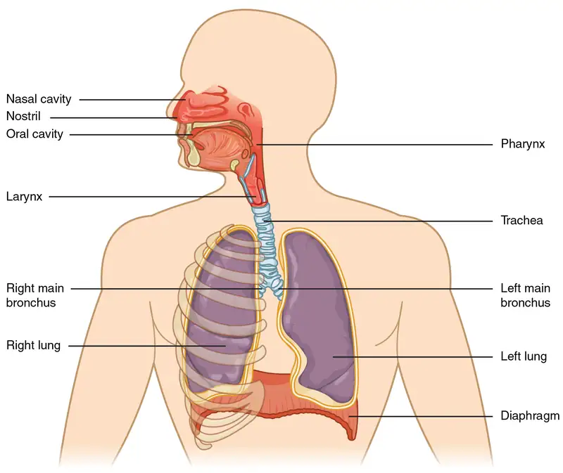
Functionally, the respiratory system can be divided into a conducting zone and a respiratory zone. The conducting zone of the respiratory system includes the organs and structures not directly involved in gas exchange. The gas exchange occurs in the respiratory zone.
Conducting Zone¶
The major functions of the conducting zone are to provide a route for incoming and outgoing air, remove debris and pathogens from the incoming air, and warm and humidify the incoming air. Several structures within the conducting zone perform other functions as well. The epithelium of the nasal passages, for example, is essential to sensing odors, and the bronchial epithelium that lines the lungs can metabolize some airborne carcinogens.
The Nose and its Adjacent Structures¶
The major entrance and exit for the respiratory system is through the nose. When discussing the nose, it is helpful to divide it into two major sections: the external nose, and the nasal cavity or internal nose.
The external nose consists of the surface and skeletal structures that result in the outward appearance of the nose and contribute to its numerous functions (Figure 22.3). The root is the region of the nose located between the eyebrows. The bridge is the part of the nose that connects the root to the rest of the nose. The dorsum nasi is the length of the nose. The apex is the tip of the nose. On either side of the apex, the nostrils are formed by the alae (singular = ala). An ala is a cartilaginous structure that forms the lateral side of each naris (plural = nares), or nostril opening. The philtrum is the concave surface that connects the apex of the nose to the upper lip.
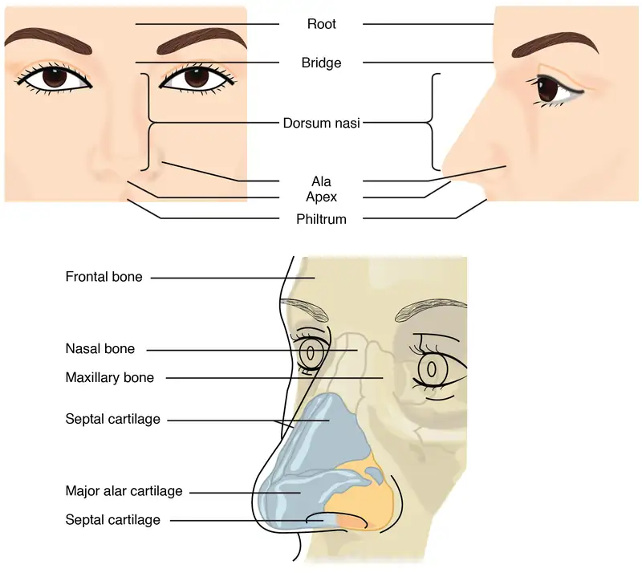
Underneath the thin skin of the nose are its skeletal features (see Figure 22.3, lower illustration). While the root and bridge of the nose consist of bone, the protruding portion of the nose is composed of cartilage. As a result, when looking at a skull, the nose is missing. The nasal bone is one of a pair of bones that lies under the root and bridge of the nose. The nasal bone articulates superiorly with the frontal bone and laterally with the maxillary bones. Septal cartilage is flexible hyaline cartilage connected to the nasal bone, forming the dorsum nasi. The alar cartilage consists of the apex of the nose; it surrounds the naris.
The nares open into the nasal cavity, which is separated into left and right sections by the nasal septum (Figure 22.4). The nasal septum is formed anteriorly by a portion of the septal cartilage (the flexible portion you can touch with your fingers) and posteriorly by the perpendicular plate of the ethmoid bone (a cranial bone located just posterior to the nasal bones) and the thin vomer bones (whose name refers to its plough shape). Each lateral wall of the nasal cavity has three bony projections, called the superior, middle, and inferior nasal conchae. The inferior conchae are separate bones, whereas the superior and middle conchae are portions of the ethmoid bone. Conchae serve to increase the surface area of the nasal cavity and to disrupt the flow of air as it enters the nose, causing air to bounce along the epithelium, where it is cleaned and warmed. The conchae and meatuses also conserve water and prevent dehydration of the nasal epithelium by trapping water during exhalation. The floor of the nasal cavity is composed of the palate. The hard palate at the anterior region of the nasal cavity is composed of bone. The soft palate at the posterior portion of the nasal cavity consists of muscle tissue. Air exits the nasal cavities via the internal nares and moves into the pharynx.
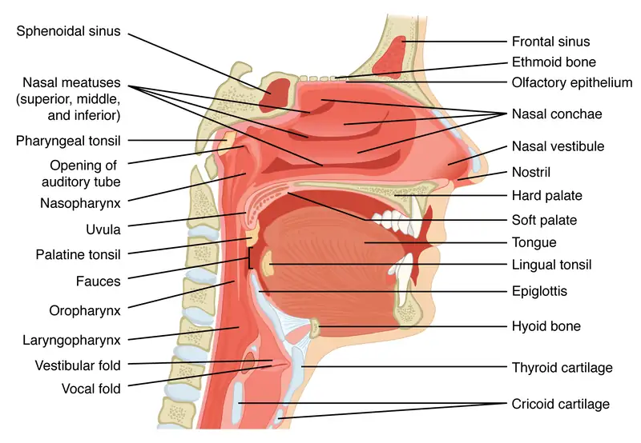
Several bones that help form the walls of the nasal cavity have air-containing spaces called the paranasal sinuses, which serve to warm and humidify incoming air. Sinuses are lined with a mucosa. Each paranasal sinus is named for its associated bone: frontal sinus, maxillary sinus, sphenoidal sinus, and ethmoidal sinus. The sinuses produce mucus and lighten the weight of the skull.
The nares and anterior portion of the nasal cavities are lined with mucous membranes, containing sebaceous glands and hair follicles that serve to prevent the passage of large debris, such as dirt, through the nasal cavity. An olfactory epithelium used to detect odors is found deeper in the nasal cavity.
The conchae, meatuses, and paranasal sinuses are lined by respiratory epithelium composed of pseudostratified ciliated columnar epithelium (Figure 22.5). The epithelium contains goblet cells, one of the specialized, columnar epithelial cells that produce mucus to trap debris. The cilia of the respiratory epithelium help remove the mucus and debris from the nasal cavity with a constant beating motion, sweeping materials towards the throat to be swallowed. Interestingly, cold air slows the movement of the cilia, resulting in accumulation of mucus that may in turn lead to a runny nose during cold weather. This moist epithelium functions to warm and humidify incoming air. Capillaries located just beneath the nasal epithelium warm the air by convection. Serous and mucus-producing cells also secrete the lysozyme enzyme and proteins called defensins, which have antibacterial properties. Immune cells that patrol the connective tissue deep to the respiratory epithelium provide additional protection.
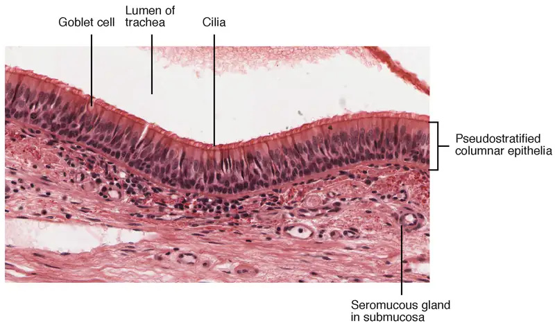
Interactive
View the University of Michigan WebScope to explore the tissue sample in greater detail.
Pharynx¶
The pharynx is a tube formed by skeletal muscle and lined by mucous membrane that is continuous with that of the nasal cavities (see Figure 22.4). The pharynx is divided into three major regions: the nasopharynx, the oropharynx, and the laryngopharynx (Figure 22.6).
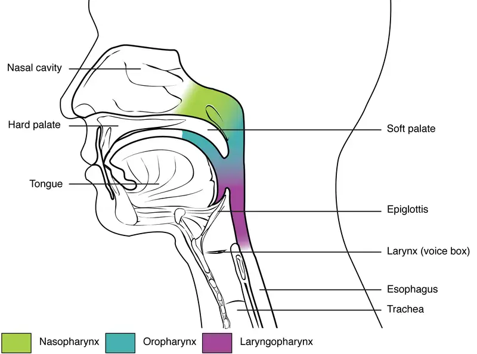
The nasopharynx is flanked by the conchae of the nasal cavity, and it serves only as an airway. At the top of the nasopharynx are the pharyngeal tonsils. A pharyngeal tonsil, also called an adenoid, is an aggregate of lymphoid reticular tissue similar to a lymph node that lies at the superior portion of the nasopharynx. The function of the pharyngeal tonsil is not well understood, but it contains a rich supply of lymphocytes and is covered with ciliated epithelium that traps and destroys invading pathogens that enter during inhalation. The pharyngeal tonsils are large in children, but interestingly, tend to regress with age and may even disappear. The uvula is a small bulbous, teardrop-shaped structure located at the apex of the soft palate. Both the uvula and soft palate move like a pendulum during swallowing, swinging upward to close off the nasopharynx to prevent ingested materials from entering the nasal cavity. In addition, auditory (Eustachian) tubes that connect to each middle ear cavity open into the nasopharynx. This connection is why colds often lead to ear infections.
The oropharynx is a passageway for both air and food. The oropharynx is bordered superiorly by the nasopharynx and anteriorly by the oral cavity. The fauces is the opening at the connection between the oral cavity and the oropharynx. As the nasopharynx becomes the oropharynx, the epithelium changes from pseudostratified ciliated columnar epithelium to stratified squamous epithelium. The oropharynx contains two distinct sets of tonsils, the palatine and lingual tonsils. A palatine tonsil is one of a pair of structures located laterally in the oropharynx in the area of the fauces. The lingual tonsil is located at the base of the tongue. Similar to the pharyngeal tonsil, the palatine and lingual tonsils are composed of lymphoid tissue, and trap and destroy pathogens entering the body through the oral or nasal cavities.
The laryngopharynx is inferior to the oropharynx and posterior to the larynx. It continues the route for ingested material and air until its inferior end, where the digestive and respiratory systems diverge. The stratified squamous epithelium of the oropharynx is continuous with the laryngopharynx. Anteriorly, the laryngopharynx opens into the larynx, whereas posteriorly, it enters the esophagus.
Larynx¶
The larynx is a cartilaginous structure inferior to the laryngopharynx that connects the pharynx to the trachea and helps regulate the volume of air that enters and leaves the lungs (Figure 22.7). The structure of the larynx is formed by several pieces of cartilage. Three large cartilage pieces—the thyroid cartilage (anterior), epiglottis (superior), and cricoid cartilage (inferior)—form the major structure of the larynx. The thyroid cartilage is the largest piece of cartilage that makes up the larynx. The thyroid cartilage consists of the laryngeal prominence, or “Adam’s apple,” which tends to be more prominent in males. The thick cricoid cartilage forms a ring, with a wide posterior region and a thinner anterior region. Three smaller, paired cartilages—the arytenoids, corniculates, and cuneiforms—attach to the epiglottis and the vocal cords and muscle that help move the vocal cords to produce speech.
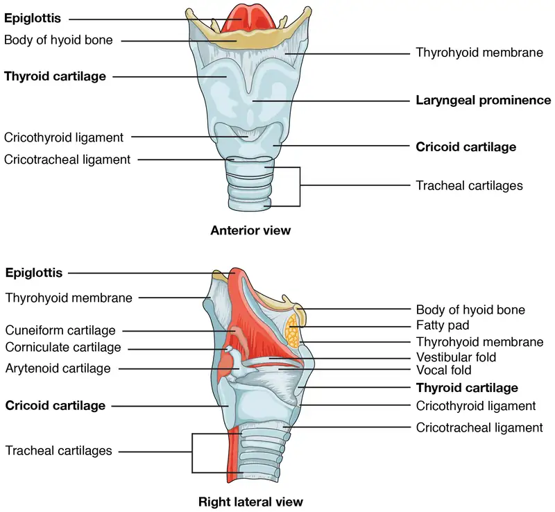
The epiglottis, attached to the thyroid cartilage, is a very flexible piece of elastic cartilage that covers the opening of the trachea (see Figure 22.4). When in the “closed” position, the unattached end of the epiglottis rests on the glottis. The glottis is composed of the vestibular folds, the true vocal cords, and the space between these folds (Figure 22.8). A vestibular fold, or false vocal cord, is one of a pair of folded sections of mucous membrane. A true vocal cord is one of the white, membranous folds attached by muscle to the thyroid and arytenoid cartilages of the larynx on their outer edges. The inner edges of the true vocal cords are free, allowing oscillation to produce sound. The size of the membranous folds of the true vocal cords differs between individuals, producing voices with different pitch ranges. Folds in males tend to be larger than those in females, which create a deeper voice. The act of swallowing causes the pharynx and larynx to lift upward, allowing the pharynx to expand and the epiglottis of the larynx to swing downward, closing the opening to the trachea. These movements produce a larger area for food to pass through, while preventing food and beverages from entering the trachea.
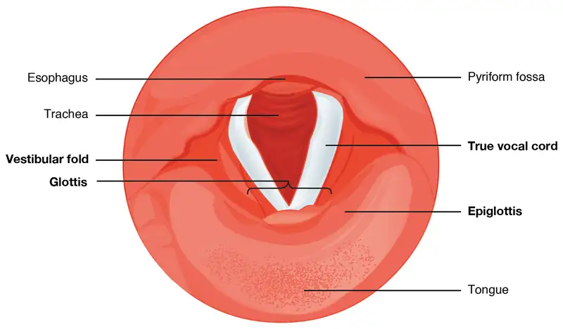
Continuous with the laryngopharynx, the superior portion of the larynx is lined with stratified squamous epithelium, transitioning into pseudostratified ciliated columnar epithelium that contains goblet cells. Similar to the nasal cavity and nasopharynx, this specialized epithelium produces mucus to trap debris and pathogens as they enter the trachea. The cilia beat the mucus upward towards the laryngopharynx, where it can be swallowed down the esophagus.
Trachea¶
The trachea (windpipe) extends from the larynx toward the lungs (Figure 22.9a). The trachea is formed by 16 to 20 stacked, C-shaped pieces of hyaline cartilage that are connected by dense connective tissue. The trachealis muscle and elastic connective tissue together form the fibroelastic membrane, a flexible membrane that closes the posterior surface of the trachea, connecting the C-shaped cartilages. The fibroelastic membrane allows the trachea to stretch and expand slightly during inhalation and exhalation, whereas the rings of cartilage provide structural support and prevent the trachea from collapsing. In addition, the trachealis muscle can be contracted to force air through the trachea during exhalation. The trachea is lined with pseudostratified ciliated columnar epithelium, which is continuous with the larynx. The esophagus borders the trachea posteriorly.
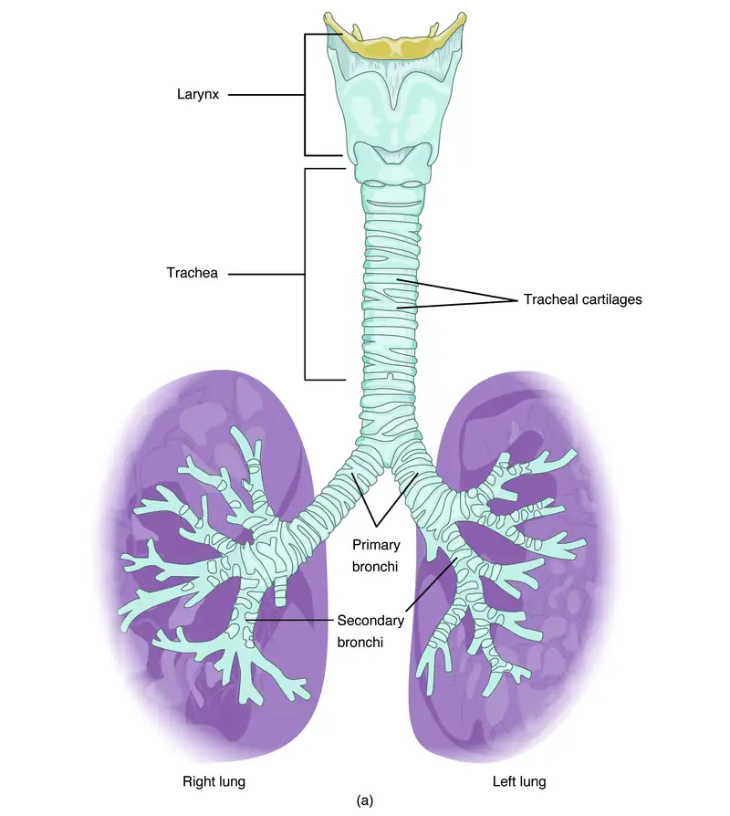
Bronchial Tree¶
The trachea branches into the right and left primary bronchi at the carina. These bronchi are also lined by pseudostratified ciliated columnar epithelium containing mucus-producing goblet cells (Figure 22.9b). The carina is a raised structure that contains specialized nervous tissue that induces violent coughing if a foreign body, such as food, is present. Rings of cartilage, similar to those of the trachea, support the structure of the bronchi and prevent their collapse. The primary bronchi enter the lungs at the hilum, a concave region where blood vessels, lymphatic vessels, and nerves also enter the lungs. The bronchi continue to branch into a bronchial tree. A bronchial tree (or respiratory tree) is the collective term used for these multiple-branched bronchi. The main function of the bronchi, like other conducting zone structures, is to provide a passageway for air to move into and out of each lung. In addition, the mucous membrane traps debris and pathogens.
A bronchiole branches from the tertiary bronchi. Bronchioles, which are about 1 mm in diameter, further branch until they become the tiny terminal bronchioles, which lead to the structures of gas exchange. There are more than 1000 terminal bronchioles in each lung. The muscular walls of the bronchioles do not contain cartilage like those of the bronchi. This muscular wall can change the size of the tubing to increase or decrease airflow through the tube.
Respiratory Zone¶
In contrast to the conducting zone, the respiratory zone includes structures that are directly involved in gas exchange. The respiratory zone begins where the terminal bronchioles join a respiratory bronchiole, the smallest type of bronchiole (Figure 22.10), which then leads to an alveolar duct, opening into a cluster of alveoli.
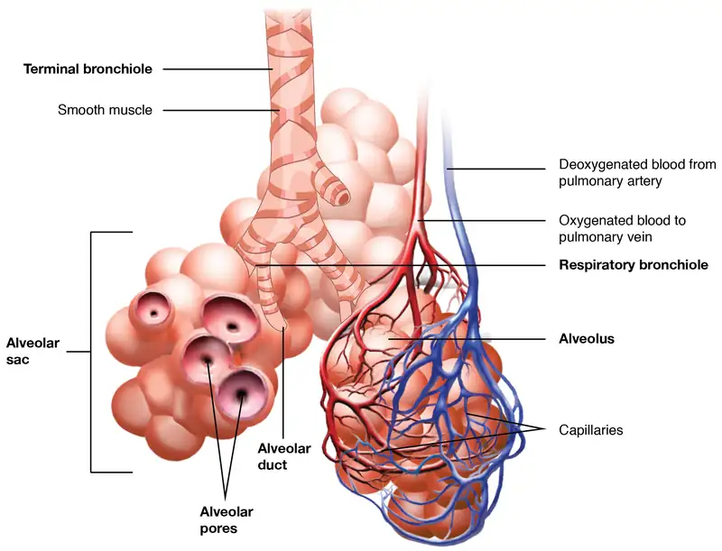
Alveoli¶
An alveolar duct is a tube composed of smooth muscle and connective tissue, which opens into a cluster of alveoli. An alveolus is one of the many small, grape-like sacs that are attached to the alveolar ducts.
An alveolar sac is a cluster of many individual alveoli that are responsible for gas exchange. An alveolus is approximately 200 μm in diameter with elastic walls that allow the alveolus to stretch during air intake, which greatly increases the surface area available for gas exchange. Alveoli are connected to their neighbors by alveolar pores, which help maintain equal air pressure throughout the alveoli and lung (Figure 22.11).
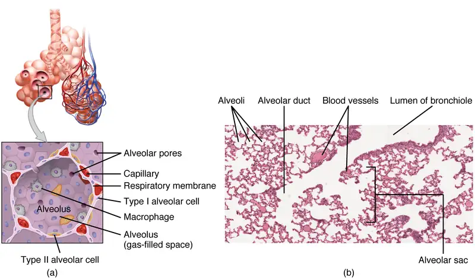
The alveolar wall consists of three major cell types: type I alveolar cells, type II alveolar cells, and alveolar macrophages. A type I alveolar cell is a squamous epithelial cell of the alveoli, which constitute up to 97 percent of the alveolar surface area. These cells are about 25 nm thick and are highly permeable to gases. A type II alveolar cell is interspersed among the type I cells and secretes pulmonary surfactant, a substance composed of phospholipids and proteins that reduces the surface tension of the alveoli. Roaming around the alveolar wall is the alveolar macrophage, a phagocytic cell of the immune system that removes debris and pathogens that have reached the alveoli.
The simple squamous epithelium formed by type I alveolar cells is attached to a thin, elastic basement membrane. This epithelium is extremely thin and borders the endothelial membrane of capillaries. Taken together, the alveoli and capillary membranes form a respiratory membrane that is approximately 0.5 μm (micrometers) thick. The respiratory membrane allows gases to cross by simple diffusion, allowing oxygen to be picked up by the blood for transport and CO2to be released into the air of the alveoli.
Diseases of the Respiratory System: Asthma
Asthma is common condition that affects the lungs in both adults and children. Approximately 8.2 percent of adults (18.7 million) and 9.4 percent of children (7 million) in the United States suffer from asthma. In addition, asthma is the most frequent cause of hospitalization in children.
Asthma is a chronic disease characterized by inflammation and edema of the airway, and bronchospasms (that is, constriction of the bronchioles), which can inhibit air from entering the lungs. In addition, excessive mucus secretion can occur, which further contributes to airway occlusion (Figure 22.12). Cells of the immune system, such as eosinophils and mononuclear cells, may also be involved in infiltrating the walls of the bronchi and bronchioles.
Bronchospasms occur periodically and lead to an “asthma attack.” An attack may be triggered by environmental factors such as dust, pollen, pet hair, or dander, changes in the weather, mold, tobacco smoke, and respiratory infections, or by exercise and stress.
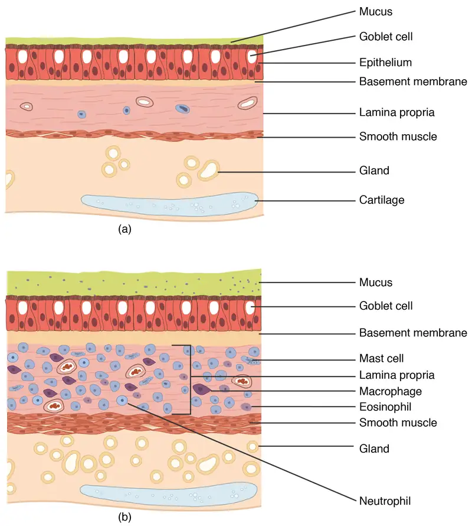
Symptoms of an asthma attack involve coughing, shortness of breath, wheezing, and tightness of the chest. Symptoms of a severe asthma attack that requires immediate medical attention would include difficulty breathing that results in blue (cyanotic) lips or face, confusion, drowsiness, a rapid pulse, sweating, and severe anxiety. The severity of the condition, frequency of attacks, and identified triggers influence the type of medication that an individual may require. Longer-term treatments are used for those with more severe asthma. Short-term, fast-acting drugs that are used to treat an asthma attack are typically administered via an inhaler. For young children or individuals who have difficulty using an inhaler, asthma medications can be administered via a nebulizer.
In many cases, the underlying cause of the condition is unknown. However, recent research has demonstrated that certain viruses, such as human rhinovirus C (HRVC), and the bacteria Mycoplasma pneumoniae and Chlamydia pneumoniae that are contracted in infancy or early childhood, may contribute to the development of many cases of asthma.
Interactive
Visit this site to learn more about what happens during an asthma attack. What are the three changes that occur inside the airways during an asthma attack?
22.2 The Lungs¶
Learning Objectives
By the end of this section, you will be able to:
- Describe the overall function of the lung
- Summarize the blood flow pattern associated with the lungs
- Outline the anatomy of the blood supply to the lungs
- Describe the pleura of the lungs and their function
A major organ of the respiratory system, each lung houses structures of both the conducting and respiratory zones. The main function of the lungs is to perform the exchange of oxygen and carbon dioxide with air from the atmosphere. To this end, the lungs exchange respiratory gases across a very large epithelial surface area—about 70 square meters—that is highly permeable to gases.
Gross Anatomy of the Lungs¶
The lungs are pyramid-shaped, paired organs that are connected to the trachea by the right and left bronchi; on the inferior surface, the lungs are bordered by the diaphragm. The diaphragm is a dome-shaped muscle located at the base of the lungs and thoracic cavity. The lungs are enclosed by the pleurae, which are attached to the mediastinum. The right lung is shorter and wider than the left lung, and the left lung occupies a smaller volume than the right. The cardiac notch is an indentation on the surface of the left lung, and it allows space for the heart (Figure 22.13). The apex of the lung is the superior region, whereas the base is the opposite region near the diaphragm. The costal surface of the lung borders the ribs. The mediastinal surface faces the midline.
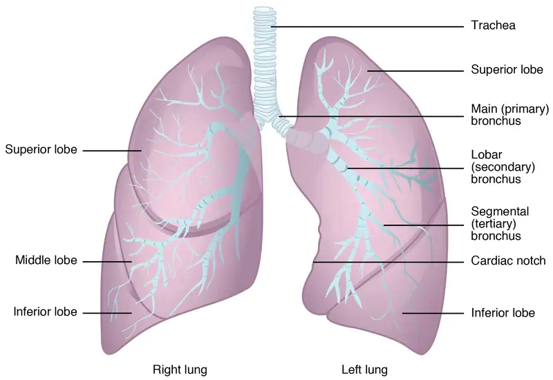
Each lung is composed of smaller units called lobes. Fissures separate these lobes from each other. The right lung consists of three lobes: the superior, middle, and inferior lobes. The left lung consists of two lobes: the superior and inferior lobes. A bronchopulmonary segment is a division of a lobe, and each lobe houses multiple bronchopulmonary segments. Each segment receives air from its own tertiary bronchus and is supplied with blood by its own artery. Some diseases of the lungs typically affect one or more bronchopulmonary segments, and in some cases, the diseased segments can be surgically removed with little influence on neighboring segments. A pulmonary lobule is a subdivision formed as the bronchi branch into bronchioles. Each lobule receives its own large bronchiole that has multiple branches. An interlobular septum is a wall, composed of connective tissue, which separates lobules from one another.
Blood Supply and Nervous Innervation of the Lungs¶
The blood supply of the lungs plays an important role in gas exchange and serves as a transport system for gases throughout the body. In addition, innervation by both the parasympathetic and sympathetic nervous systems provides an important level of control through dilation and constriction of the airway.
Blood Supply¶
The major function of the lungs is to perform gas exchange, which requires blood from the pulmonary circulation. This blood supply contains deoxygenated blood and travels to the lungs where erythrocytes, also known as red blood cells, pick up oxygen to be transported to tissues throughout the body. The pulmonary artery is an artery that arises from the pulmonary trunk and carries deoxygenated, arterial blood to the alveoli. The pulmonary artery branches multiple times as it follows the bronchi, and each branch becomes progressively smaller in diameter. One arteriole and an accompanying venule supply and drain one pulmonary lobule. As they near the alveoli, the pulmonary arteries become the pulmonary capillary network. The pulmonary capillary network consists of tiny vessels with very thin walls that lack smooth muscle fibers. The capillaries branch and follow the bronchioles and structure of the alveoli. It is at this point that the capillary wall meets the alveolar wall, creating the respiratory membrane. Once the blood is oxygenated, it drains from the alveoli by way of multiple pulmonary veins, which exit the lungs through the hilum.
Nervous Innervation¶
Dilation and constriction of the airway are achieved through nervous control by the parasympathetic and sympathetic nervous systems. The parasympathetic system causes bronchoconstriction, whereas the sympathetic nervous system stimulates bronchodilation. Reflexes such as coughing, and the ability of the lungs to regulate oxygen and carbon dioxide levels, also result from this autonomic nervous system control. Sensory nerve fibers arise from the vagus nerve, and from the second to fifth thoracic ganglia. The pulmonary plexus is a region on the lung root formed by the entrance of the nerves at the hilum. The nerves then follow the bronchi in the lungs and branch to innervate muscle fibers, glands, and blood vessels.
Pleura of the Lungs¶
Each lung is enclosed within a cavity that is surrounded by the pleura. The pleura (plural = pleurae) is a serous membrane that surrounds the lung. The right and left pleurae, which enclose the right and left lungs, respectively, are separated by the mediastinum. The pleurae consist of two layers. The visceral pleura is the layer that is superficial to the lungs, and extends into and lines the lung fissures (Figure 22.14). In contrast, the parietal pleura is the outer layer that connects to the thoracic wall, the mediastinum, and the diaphragm. The visceral and parietal pleurae connect to each other at the hilum. The pleural cavity is the space between the visceral and parietal layers.
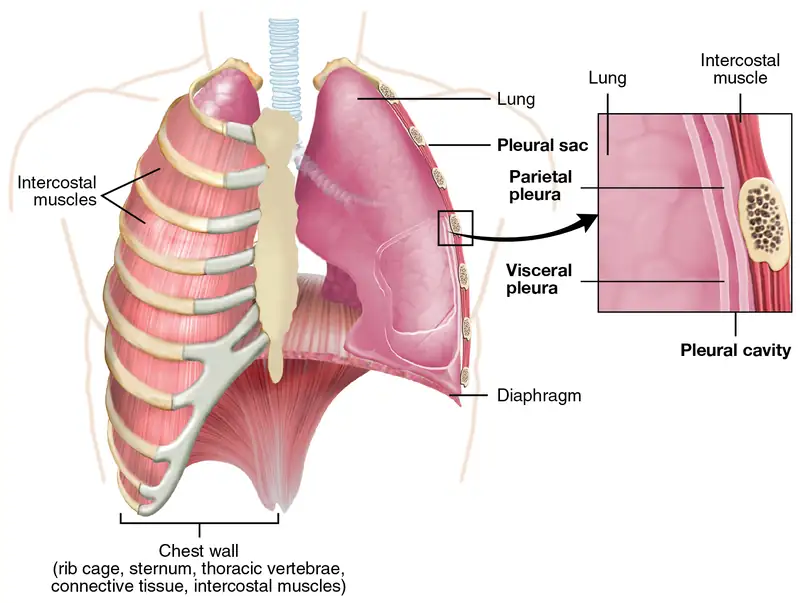
The pleurae perform two major functions: They produce pleural fluid and create cavities that separate the major organs. Pleural fluid is secreted by mesothelial cells from both pleural layers and acts to lubricate their surfaces. This lubrication reduces friction between the two layers to prevent trauma during breathing, and creates surface tension that helps maintain the position of the lungs against the thoracic wall. This adhesive characteristic of the pleural fluid causes the lungs to enlarge when the thoracic wall expands during ventilation, allowing the lungs to fill with air. The pleurae also create a division between major organs that prevents interference due to the movement of the organs, while preventing the spread of infection.
Everyday Connection: The Effects of Second-Hand Tobacco Smoke
The burning of a tobacco cigarette creates multiple chemical compounds that are released through mainstream smoke, which is inhaled by the smoker, and through sidestream smoke, which is the smoke that is given off by the burning cigarette. Second-hand smoke, which is a combination of sidestream smoke and the mainstream smoke that is exhaled by the smoker, has been demonstrated by numerous scientific studies to cause disease. At least 40 chemicals in sidestream smoke have been identified that negatively impact human health, leading to the development of cancer or other conditions, such as immune system dysfunction, liver toxicity, cardiac arrhythmias, pulmonary edema, and neurological dysfunction. Furthermore, second-hand smoke has been found to harbor at least 250 compounds that are known to be toxic, carcinogenic, or both. Some major classes of carcinogens in second-hand smoke are polyaromatic hydrocarbons (PAHs), N-nitrosamines, aromatic amines, formaldehyde, and acetaldehyde.
Tobacco and second-hand smoke are considered to be carcinogenic. Exposure to second-hand smoke can cause lung cancer in individuals who are not tobacco users themselves. It is estimated that the risk of developing lung cancer is increased by up to 30 percent in nonsmokers who live with an individual who smokes in the house, as compared to nonsmokers who are not regularly exposed to second-hand smoke. Children are especially affected by second-hand smoke. Children who live with an individual who smokes inside the home have a larger number of lower respiratory infections, which are associated with hospitalizations, and higher risk of sudden infant death syndrome (SIDS). Second-hand smoke in the home has also been linked to a greater number of ear infections in children, as well as worsening symptoms of asthma.
22.3 The Process of Breathing¶
Learning Objectives
By the end of this section, you will be able to:
- Describe the mechanisms that drive breathing
- Discuss how pressure, volume, and resistance are related
- List the steps involved in pulmonary ventilation
- Discuss the physical factors related to breathing
- Discuss the meaning of respiratory volume and capacities
- Define respiratory rate
- Outline the mechanisms behind the control of breathing
- Describe the respiratory centers of the medulla oblongata
- Describe the respiratory centers of the pons
- Discuss factors that can influence the respiratory rate
Pulmonary ventilation is the act of breathing, which can be described as the movement of air into and out of the lungs. The major mechanisms that drive pulmonary ventilation are atmospheric pressure (Patm); the air pressure within the alveoli, called intra-alveolar pressure (Palv); and the pressure within the pleural cavity, called intrapleural pressure (Pip).
Mechanisms of Breathing¶
The intra-alveolar and intrapleural pressures are dependent on certain physical features of the lung. However, the ability to breathe—to have air enter the lungs during inspiration and air leave the lungs during expiration—is dependent on the air pressure of the atmosphere and the air pressure within the lungs.
Pressure Relationships¶
Inspiration (or inhalation) and expiration (or exhalation) are dependent on the differences in pressure between the atmosphere and the lungs. In a gas, pressure is a force created by the movement of gas molecules that are confined. For example, a certain number of gas molecules in a two-liter container has more room than the same number of gas molecules in a one-liter container (Figure 22.15). In this case, the force exerted by the movement of the gas molecules against the walls of the two-liter container is lower than the force exerted by the gas molecules in the one-liter container. Therefore, the pressure is lower in the two-liter container and higher in the one-liter container. At a constant temperature, changing the volume occupied by the gas changes the pressure, as does changing the number of gas molecules. Boyle’s law describes the relationship between volume and pressure in a gas at a constant temperature. Boyle discovered that the pressure of a gas is inversely proportional to its volume: If volume increases, pressure decreases. Likewise, if volume decreases, pressure increases. Pressure and volume are inversely related (P = k/V). Therefore, the pressure in the one-liter container (one-half the volume of the two-liter container) would be twice the pressure in the two-liter container. Boyle’s law is expressed by the following formula:
In this formula, P1 represents the initial pressure and V1 represents the initial volume, whereas the final pressure and volume are represented by P2 and V2,respectively. If the two- and one-liter containers were connected by a tube and the volume of one of the containers were changed, then the gases would move from higher pressure (lower volume) to lower pressure (higher volume).
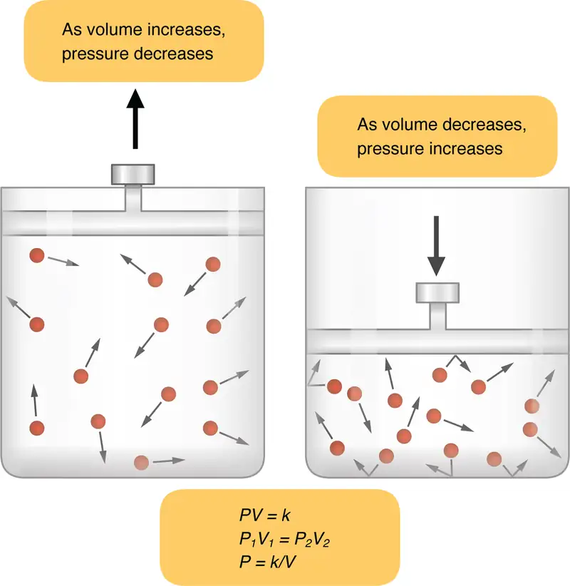
Pulmonary ventilation is dependent on three types of pressure: atmospheric, intra-alveolar, and intrapleural. Atmospheric pressure is the amount of force that is exerted by gases in the air surrounding any given surface, such as the body. Atmospheric pressure can be expressed in terms of the unit atmosphere, abbreviated atm, or in millimeters of mercury (mm Hg). One atm is equal to 760 mm Hg, which is the atmospheric pressure at sea level. Typically, for respiration, other pressure values are discussed in relation to atmospheric pressure. Therefore, negative pressure is pressure lower than the atmospheric pressure, whereas positive pressure is pressure that it is greater than the atmospheric pressure. A pressure that is equal to the atmospheric pressure is expressed as zero.
Intra-alveolar pressure (intrapulmonary pressure) is the pressure of the air within the alveoli, which changes during the different phases of breathing (Figure 22.16). Because the alveoli are connected to the atmosphere via the tubing of the airways (similar to the two- and one-liter containers in the example above), the intrapulmonary pressure of the alveoli always equalizes with the atmospheric pressure.
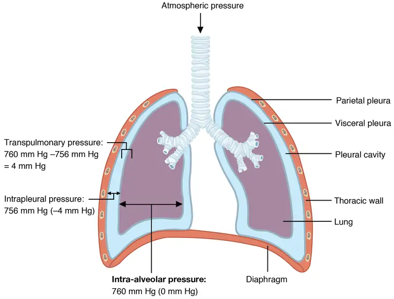
Intrapleural pressure is the pressure of the air within the pleural cavity, between the visceral and parietal pleurae. Similar to intra-alveolar pressure, intrapleural pressure also changes during the different phases of breathing. However, due to certain characteristics of the lungs, the intrapleural pressure is always lower than, or negative to, the intra-alveolar pressure (and therefore also to atmospheric pressure). Although it fluctuates during inspiration and expiration, intrapleural pressure remains approximately –4 mm Hg throughout the breathing cycle.
Competing forces within the thorax cause the formation of the negative intrapleural pressure. One of these forces relates to the elasticity of the lungs themselves—elastic tissue pulls the lungs inward, away from the thoracic wall. Surface tension of alveolar fluid, which is mostly water, also creates an inward pull of the lung tissue. This inward tension from the lungs is countered by opposing forces from the pleural fluid and thoracic wall. Surface tension within the pleural cavity pulls the lungs outward. Too much or too little pleural fluid would hinder the creation of the negative intrapleural pressure; therefore, the level must be closely monitored by the mesothelial cells and drained by the lymphatic system. Since the parietal pleura is attached to the thoracic wall, the natural elasticity of the chest wall opposes the inward pull of the lungs. Ultimately, the outward pull is slightly greater than the inward pull, creating the –4 mm Hg intrapleural pressure relative to the intra-alveolar pressure. Transpulmonary pressure is the difference between the intrapleural and intra-alveolar pressures, and it determines the size of the lungs. A higher transpulmonary pressure corresponds to a larger lung.
Physical Factors Affecting Ventilation¶
In addition to the differences in pressures, breathing is also dependent upon the contraction and relaxation of muscle fibers of both the diaphragm and thorax. The lungs themselves are passive during breathing, meaning they are not involved in creating the movement that helps inspiration and expiration. This is because of the adhesive nature of the pleural fluid, which allows the lungs to be pulled outward when the thoracic wall moves during inspiration. The recoil of the thoracic wall during expiration causes compression of the lungs. Contraction and relaxation of the diaphragm and intercostals muscles (found between the ribs) cause most of the pressure changes that result in inspiration and expiration. These muscle movements and subsequent pressure changes cause air to either rush in or be forced out of the lungs.
Other characteristics of the lungs influence the effort that must be expended to ventilate. Resistance is a force that slows motion, in this case, the flow of gases. The size of the airway is the primary factor affecting resistance. A small tubular diameter forces air through a smaller space, causing more collisions of air molecules with the walls of the airways. The following formula helps to describe the relationship between airway resistance and pressure changes:
As noted earlier, there is surface tension within the alveoli caused by water present in the lining of the alveoli. This surface tension tends to inhibit expansion of the alveoli. However, pulmonary surfactant secreted by type II alveolar cells mixes with that water and helps reduce this surface tension. Without pulmonary surfactant, the alveoli would collapse during expiration.
Thoracic wall compliance is the ability of the thoracic wall to stretch while under pressure. This can also affect the effort expended in the process of breathing. In order for inspiration to occur, the thoracic cavity must expand. The expansion of the thoracic cavity directly influences the capacity of the lungs to expand. If the tissues of the thoracic wall are not very compliant, it will be difficult to expand the thorax to increase the size of the lungs.
Pulmonary Ventilation¶
The difference in pressures drives pulmonary ventilation because air flows down a pressure gradient, that is, air flows from an area of higher pressure to an area of lower pressure. Air flows into the lungs largely due to a difference in pressure; atmospheric pressure is greater than intra-alveolar pressure, and intra-alveolar pressure is greater than intrapleural pressure. Air flows out of the lungs during expiration based on the same principle; pressure within the lungs becomes greater than the atmospheric pressure.
Pulmonary ventilation comprises two major steps: inspiration and expiration. Inspiration is the process that causes air to enter the lungs, and expiration is the process that causes air to leave the lungs (Figure 22.17). A respiratory cycle is one sequence of inspiration and expiration. In general, two muscle groups are used during normal inspiration: the diaphragm and the external intercostal muscles. Additional muscles can be used if a bigger breath is required. When the diaphragm contracts, it moves inferiorly toward the abdominal cavity, creating a larger thoracic cavity and more space for the lungs. Contraction of the external intercostal muscles moves the ribs upward and outward, causing the rib cage to expand, which increases the volume of the thoracic cavity. Due to the adhesive force of the pleural fluid, the expansion of the thoracic cavity forces the lungs to stretch and expand as well. This increase in volume leads to a decrease in intra-alveolar pressure, creating a pressure lower than atmospheric pressure. As a result, a pressure gradient is created that drives air into the lungs.
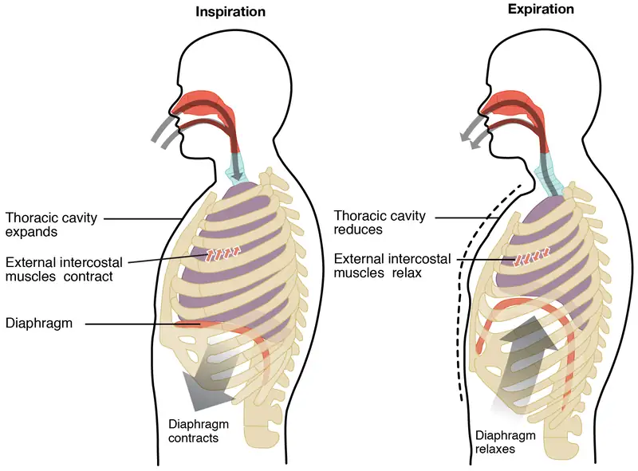
The process of normal expiration is passive, meaning that energy is not required to push air out of the lungs. Instead, the elasticity of the lung tissue causes the lung to recoil, as the diaphragm and intercostal muscles relax following inspiration. In turn, the thoracic cavity and lungs decrease in volume, causing an increase in intrapulmonary pressure. The intrapulmonary pressure rises above atmospheric pressure, creating a pressure gradient that causes air to leave the lungs.
There are different types, or modes, of breathing that require a slightly different process to allow inspiration and expiration. Quiet breathing, also known as eupnea, is a mode of breathing that occurs at rest and does not require the cognitive thought of the individual. During quiet breathing, the diaphragm and external intercostals must contract.
A deep breath, called diaphragmatic breathing, requires the diaphragm to contract. As the diaphragm relaxes, air passively leaves the lungs. A shallow breath, called costal breathing, requires contraction of the intercostal muscles. As the intercostal muscles relax, air passively leaves the lungs.
In contrast, forced breathing, also known as hyperpnea, is a mode of breathing that can occur during exercise or actions that require the active manipulation of breathing, such as singing. During forced breathing, inspiration and expiration both occur due to muscle contractions. In addition to the contraction of the diaphragm and intercostal muscles, other accessory muscles must also contract. During forced inspiration, muscles of the neck, including the scalenes, contract and lift the thoracic wall, increasing lung volume. During forced expiration, accessory muscles of the abdomen, including the obliques, contract, forcing abdominal organs upward against the diaphragm. This helps to push the diaphragm further into the thorax, pushing more air out. In addition, accessory muscles (primarily the internal intercostals) help to compress the rib cage, which also reduces the volume of the thoracic cavity.
Respiratory Volumes and Capacities¶
Respiratory volume is the term used for various volumes of air moved by or associated with the lungs at a given point in the respiratory cycle. There are four major types of respiratory volumes: tidal, residual, inspiratory reserve, and expiratory reserve (Figure 22.18). Tidal volume (TV) is the amount of air that normally enters the lungs during quiet breathing, which is about 500 milliliters. Expiratory reserve volume (ERV) is the amount of air you can forcefully exhale past a normal tidal expiration, up to 1200 milliliters for males. Inspiratory reserve volume (IRV) is produced by a deep inhalation, past a tidal inspiration. This is the extra volume that can be brought into the lungs during a forced inspiration. Residual volume (RV) is the air left in the lungs if you exhale as much air as possible. The residual volume makes breathing easier by preventing the alveoli from collapsing. Respiratory volume is dependent on a variety of factors, and measuring the different types of respiratory volumes can provide important clues about a person’s respiratory health (Figure 22.19).
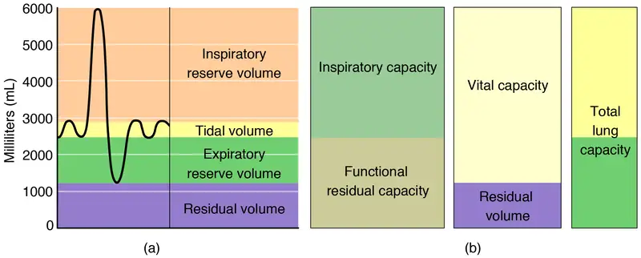
![This tables describes methods of pulmonary function testing. Spirometry tests require a spirometer. These tests can measure forced vital capacity (FVC), the volume of air that is exhaled after maximum inhalation; foreced expiratory volume (FEV), the volume of air exhaled in one breath; forced expiratory flow, 25 to 75 percent, the air flow in the middle of exhalation; peak expiratory flow (PEF), the rate of exhalation; maximum voluntary ventilation (MVV), the volume of air that can be inspired and expired in 1 minute; slow vital capacity (SVC), the volume of air that can be slowly exhaled after inhaling past the tidal volume; total lung capacity (TLC), the volume of air in the lungs after maximum inhalation; functional residual capacity (FRC), the volume of air left in the lungs after normal expiration; residual volume (RV), the volume of air in the lungs after maximum exhalation; total lung capacity (TLC), the maximum volume of air that the lungs can hold; and expiratory reserve volume (ERV), the volume of air that can be exhaled beyond normal exhalation. Gas diffusion tests require a blood gas analyzer. These tests can measure arterial blood gases, the concentration of oxygen and carbon dioxide in the blood.](img/2329-pulmonary-function-testing.webp)
Respiratory capacity is the combination of two or more selected volumes, which further describes the amount of air in the lungs during a given time. For example, total lung capacity (TLC) is the sum of all of the lung volumes (TV, ERV, IRV, and RV), which represents the total amount of air a person can hold in the lungs after a forceful inhalation. TLC is about 6000 mL air for males, and about 4200 mL for females. Vital capacity (VC) is the amount of air a person can move into or out of their lungs, and is the sum of all of the volumes except residual volume (TV, ERV, and IRV), which is between 4000 and 5000 milliliters. Inspiratory capacity (IC) is the maximum amount of air that can be inhaled past a normal tidal expiration, is the sum of the tidal volume and inspiratory reserve volume. On the other hand, the functional residual capacity (FRC) is the amount of air that remains in the lung after a normal tidal expiration; it is the sum of expiratory reserve volume and residual volume (see Figure 22.18).
Interactive
Watch this video to learn more about lung volumes and spirometers. Explain how spirometry test results can be used to diagnose respiratory diseases or determine the effectiveness of disease treatment.
In addition to the air that creates respiratory volumes, the respiratory system also contains anatomical dead space, which is air that is present in the airway that never reaches the alveoli and therefore never participates in gas exchange. Alveolar dead space involves air found within alveoli that are unable to function, such as those affected by disease or abnormal blood flow. Total dead space is the anatomical dead space and alveolar dead space together, and represents all of the air in the respiratory system that is not being used in the gas exchange process.
Respiratory Rate and Control of Ventilation¶
Breathing usually occurs without thought, although at times you can consciously control it, such as when you swim under water, sing a song, or blow bubbles. The respiratory rate is the total number of breaths, or respiratory cycles, that occur each minute. Respiratory rate can be an important indicator of disease, as the rate may increase or decrease during an illness or in a disease condition. The respiratory rate is controlled by the respiratory center located within the medulla oblongata in the brain, which responds primarily to changes in carbon dioxide, oxygen, and pH levels in the blood.
The normal respiratory rate of a child decreases from birth to adolescence. A child under 1 year of age has a normal respiratory rate between 30 and 60 breaths per minute, but by the time a child is about 10 years old, the normal rate is closer to 18 to 30. By adolescence, the normal respiratory rate is similar to that of adults, 12 to 18 breaths per minute.
Ventilation Control Centers¶
The control of ventilation is a complex interplay of multiple regions in the brain that signal the muscles used in pulmonary ventilation to contract (Table 22.1). The result is typically a rhythmic, consistent ventilation rate that provides the body with sufficient amounts of oxygen, while adequately removing carbon dioxide.
Table 22.1
| Summary of Ventilation Regulation | |
|---|---|
| System component | Function |
| Medullary respiratory center | Sets the basic rhythm of breathing |
| Ventral respiratory group (VRG) | Generates the breathing rhythm and integrates data coming into the medulla |
| Dorsal respiratory group (DRG) | Integrates input from the stretch receptors and the chemoreceptors in the periphery |
| Pontine respiratory group (PRG) | Influences and modifies the medulla oblongata’s functions |
| Aortic body | Monitors blood PCO2, PO2, and pH |
| Carotid body | Monitors blood PCO2, PO2, and pH |
| Hypothalamus | Monitors emotional state and body temperature |
| Cortical areas of the brain | Control voluntary breathing |
| Proprioceptors | Send impulses regarding joint and muscle movements |
| Pulmonary irritant reflexes | Protect the respiratory zones of the system from foreign material |
| Inflation reflex | Protects the lungs from over-inflating |
Neurons that innervate the muscles of the respiratory system are responsible for controlling and regulating pulmonary ventilation. The major brain centers involved in pulmonary ventilation are the medulla oblongata and the pontine respiratory group (Figure 22.20).
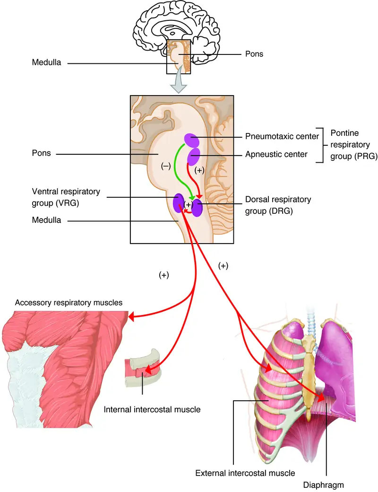
The medulla oblongata contains the dorsal respiratory group (DRG) and the ventral respiratory group (VRG). The VRG is involved in maintaining a constant breathing rhythm by stimulating the diaphragm and external intercostal muscles to contract, resulting in inspiration. When activity in the VRG ceases, it no longer stimulates the diaphragm and intercostals to contract, allowing them to relax, resulting in expiration. The DRG receives input from sensors such as lung stretch receptors and peripheral chemoreceptors. The DRG integrates this information, then communicates with the VRG to modify respiratory rhythm.
The second respiratory center of the brain is located within the pons, called the pontine respiratory group, and consists of the apneustic and pneumotaxic centers. The apneustic center is a double cluster of neuronal cell bodies that stimulate neurons in the DRG, controlling the depth of inspiration, particularly for deep breathing. The pneumotaxic center is a network of neurons that inhibits the activity of neurons in the DRG, allowing relaxation after inspiration, and thus controlling the overall rate.
Factors That Affect the Rate and Depth of Respiration¶
The respiratory rate and the depth of inspiration are regulated by the medulla oblongata and pons; however, these regions of the brain do so in response to systemic stimuli. It is a dose-response, positive-feedback relationship in which the greater the stimulus, the greater the response. Thus, increasing stimuli results in forced breathing. Multiple systemic factors are involved in stimulating the brain to produce pulmonary ventilation.
The major factor that stimulates the medulla oblongata and pons to produce respiration is surprisingly not oxygen concentration, but rather the concentration of carbon dioxide in the blood. As you recall, carbon dioxide is a waste product of cellular respiration and can be toxic. Concentrations of chemicals are sensed by chemoreceptors. A central chemoreceptor is one of the specialized receptors that are located in the brain and brainstem, whereas a peripheral chemoreceptor is one of the specialized receptors located in the carotid arteries and aortic arch. Concentration changes in certain substances, such as carbon dioxide or hydrogen ions, stimulate these receptors, which in turn signal the respiration centers of the brain. In the case of carbon dioxide, as the concentration of CO2 in the blood increases, it readily diffuses across the blood-brain barrier, where it collects in the extracellular fluid. As will be explained in more detail later, increased carbon dioxide levels lead to increased levels of hydrogen ions, decreasing pH. The increase in hydrogen ions in the brain triggers the central chemoreceptors to stimulate the respiratory centers to initiate contraction of the diaphragm and intercostal muscles. As a result, the rate and depth of respiration increase, allowing more carbon dioxide to be expelled, which brings more air into and out of the lungs promoting a reduction in the blood levels of carbon dioxide, and therefore hydrogen ions, in the blood. In contrast, low levels of carbon dioxide in the blood cause low levels of hydrogen ions in the brain, leading to a decrease in the rate and depth of pulmonary ventilation, producing shallow, slow breathing.
Another factor involved in influencing the respiratory activity of the brain is systemic arterial concentrations of hydrogen ions. Increasing carbon dioxide levels can lead to increased H+ levels, as mentioned above, as well as other metabolic activities, such as lactic acid accumulation after strenuous exercise. Peripheral chemoreceptors of the aortic arch and carotid arteries sense arterial levels of hydrogen ions. When peripheral chemoreceptors sense decreasing, or more acidic, pH levels, they stimulate an increase in ventilation to remove carbon dioxide from the blood at a quicker rate. Removal of carbon dioxide from the blood helps to reduce hydrogen ions, thus increasing systemic pH.
Blood levels of oxygen are also important in influencing respiratory rate. The peripheral chemoreceptors are responsible for sensing large changes in blood oxygen levels. If blood oxygen levels become quite low—about 60 mm Hg or less—then peripheral chemoreceptors stimulate an increase in respiratory activity. The chemoreceptors are only able to sense dissolved oxygen molecules, not the oxygen that is bound to hemoglobin. As you recall, the majority of oxygen is bound by hemoglobin; when dissolved levels of oxygen drop, hemoglobin releases oxygen. Therefore, a large drop in oxygen levels is required to stimulate the chemoreceptors of the aortic arch and carotid arteries.
The hypothalamus and other brain regions associated with the limbic system also play roles in influencing the regulation of breathing by interacting with the respiratory centers. The hypothalamus and other regions associated with the limbic system are involved in regulating respiration in response to emotions, pain, and temperature. For example, an increase in body temperature causes an increase in respiratory rate. Feeling excited or the fight-or-flight response will also result in an increase in respiratory rate.
Disorders of the Respiratory System: Sleep Apnea
Sleep apnea is a chronic disorder that can occur in children or adults, and is characterized by the cessation of breathing during sleep. These episodes may last for several seconds or several minutes, and may differ in the frequency with which they are experienced. Sleep apnea leads to poor sleep, which is reflected in the symptoms of fatigue, evening napping, irritability, memory problems, and morning headaches. In addition, many individuals with sleep apnea experience a dry throat in the morning after waking from sleep, which may be due to excessive snoring.
There are two types of sleep apnea: obstructive sleep apnea and central sleep apnea. Obstructive sleep apnea is caused by an obstruction of the airway during sleep, which can occur at different points in the airway, depending on the underlying cause of the obstruction. For example, the tongue and throat muscles of some individuals with obstructive sleep apnea may relax excessively, causing the muscles to push into the airway. Another example is obesity, which is a known risk factor for sleep apnea, as excess adipose tissue in the neck region can push the soft tissues towards the lumen of the airway, causing the trachea to narrow.
In central sleep apnea, the respiratory centers of the brain do not respond properly to rising carbon dioxide levels and therefore do not stimulate the contraction of the diaphragm and intercostal muscles regularly. As a result, inspiration does not occur and breathing stops for a short period. In some cases, the cause of central sleep apnea is unknown. However, some medical conditions, such as stroke and congestive heart failure, may cause damage to the pons or medulla oblongata. In addition, some pharmacologic agents, such as morphine, can affect the respiratory centers, causing a decrease in the respiratory rate. The symptoms of central sleep apnea are similar to those of obstructive sleep apnea.
A diagnosis of sleep apnea is usually done during a sleep study, where the patient is monitored in a sleep laboratory for several nights. The patient’s blood oxygen levels, heart rate, respiratory rate, and blood pressure are monitored, as are brain activity and the volume of air that is inhaled and exhaled. Treatment of sleep apnea commonly includes the use of a device called a continuous positive airway pressure (CPAP) machine during sleep. The CPAP machine has a mask that covers the nose, or the nose and mouth, and forces air into the airway at regular intervals. This pressurized air can help to gently force the airway to remain open, allowing more normal ventilation to occur. Other treatments include lifestyle changes to decrease weight, eliminate alcohol and other sleep apnea–promoting drugs, and changes in sleep position. In addition to these treatments, patients with central sleep apnea may need supplemental oxygen during sleep.
22.4 Gas Exchange¶
Learning Objectives
By the end of this section, you will be able to:
- Compare the composition of atmospheric air and alveolar air
- Describe the mechanisms that drive gas exchange
- Discuss the importance of sufficient ventilation and perfusion, and how the body adapts when they are insufficient
- Discuss the process of external respiration
- Describe the process of internal respiration
The purpose of the respiratory system is to perform gas exchange. Pulmonary ventilation provides air to the alveoli for this gas exchange process. At the respiratory membrane, where the alveolar and capillary walls meet, gases move across the membranes, with oxygen entering the bloodstream and carbon dioxide exiting. It is through this mechanism that blood is oxygenated and carbon dioxide, the waste product of cellular respiration, is removed from the body.
Gas Exchange¶
In order to understand the mechanisms of gas exchange in the lung, it is important to understand the underlying principles of gases and their behavior. In addition to Boyle’s law, several other gas laws help to describe the behavior of gases.
Gas Laws and Air Composition¶
Gas molecules exert force on the surfaces with which they are in contact; this force is called pressure. In natural systems, gases are normally present as a mixture of different types of molecules. For example, the atmosphere consists of oxygen, nitrogen, carbon dioxide, and other gaseous molecules, and this gaseous mixture exerts a certain pressure referred to as atmospheric pressure (Table 22.2). Partial pressure (Px) is the pressure of a single type of gas in a mixture of gases. For example, in the atmosphere, oxygen exerts a partial pressure, and nitrogen exerts another partial pressure, independent of the partial pressure of oxygen (Figure 22.21). Total pressure is the sum of all the partial pressures of a gaseous mixture. Dalton’s law describes the behavior of nonreactive gases in a gaseous mixture and states that a specific gas type in a mixture exerts its own pressure; thus, the total pressure exerted by a mixture of gases is the sum of the partial pressures of the gases in the mixture.
Table 22.2
| Partial Pressures of Atmospheric Gases | ||
|---|---|---|
| Gas | Percent of total composition | Partial pressure (mm Hg) |
| Nitrogen (N2) | 78.6 | 597.4 |
| Oxygen (O2) | 20.9 | 158.8 |
| Water (H2O) | 0.4 | 3.0 |
| Carbon dioxide (CO2) | 0.04 | 0.3 |
| Others | 0.06 | 0.5 |
| Total composition/total atmospheric pressure | 100% | 760.0 |
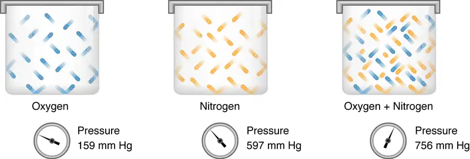
Partial pressure is extremely important in predicting the movement of gases. Recall that gases tend to equalize their pressure in two regions that are connected. A gas will move from an area where its partial pressure is higher to an area where its partial pressure is lower. In addition, the greater the partial pressure difference between the two areas, the more rapid is the movement of gases.
Solubility of Gases in Liquids¶
Henry’s law describes the behavior of gases when they come into contact with a liquid, such as blood. Henry’s law states that the concentration of gas in a liquid is directly proportional to the solubility and partial pressure of that gas. The greater the partial pressure of the gas, the greater the number of gas molecules that will dissolve in the liquid. The concentration of the gas in a liquid is also dependent on the solubility of the gas in the liquid. For example, although nitrogen is present in the atmosphere, very little nitrogen dissolves into the blood, because the solubility of nitrogen in blood is very low. The exception to this occurs in scuba divers; the composition of the compressed air that divers breathe causes nitrogen to have a higher partial pressure than normal, causing it to dissolve in the blood in greater amounts than normal. Too much nitrogen in the bloodstream results in a serious condition that can be fatal if not corrected. Gas molecules establish an equilibrium between those molecules dissolved in liquid and those in air.
The composition of air in the atmosphere and in the alveoli differs. In both cases, the relative concentration of gases is nitrogen > oxygen > water vapor > carbon dioxide. The amount of water vapor present in alveolar air is greater than that in atmospheric air (Table 22.3). Recall that the respiratory system works to humidify incoming air, thereby causing the air present in the alveoli to have a greater amount of water vapor than atmospheric air. In addition, alveolar air contains a greater amount of carbon dioxide and less oxygen than atmospheric air. This is no surprise, as gas exchange removes oxygen from and adds carbon dioxide to alveolar air. Both deep and forced breathing cause the alveolar air composition to be changed more rapidly than during quiet breathing. As a result, the partial pressures of oxygen and carbon dioxide change, affecting the diffusion process that moves these materials across the membrane. This will cause oxygen to enter and carbon dioxide to leave the blood more quickly.
Table 22.3
| Composition and Partial Pressures of Alveolar Air | ||
|---|---|---|
| Gas | Percent of total composition | Partial pressure (mm Hg) |
| Nitrogen (N2) | 74.9 | 569 |
| Oxygen (O2) | 13.7 | 104 |
| Water (H2O) | 6.2 | 47 |
| Carbon dioxide (CO2) | 5.2 | 40 |
| Total composition/total alveolar pressure | 100% | 760.0 |
Ventilation and Perfusion¶
Two important aspects of gas exchange in the lung are ventilation and perfusion. Ventilation is the movement of air into and out of the lungs, and perfusion is the flow of blood in the pulmonary capillaries. For gas exchange to be efficient, the volumes involved in ventilation and perfusion should be compatible. However, factors such as regional gravity effects on blood, blocked alveolar ducts, or disease can cause ventilation and perfusion to be imbalanced.
The partial pressure of oxygen in alveolar air is about 104 mm Hg, whereas the partial pressure of oxygenated blood in pulmonary veins is about 100 mm Hg. When ventilation is sufficient, oxygen enters the alveoli at a high rate, and the partial pressure of oxygen in the alveoli remains high. In contrast, when ventilation is insufficient, the partial pressure of oxygen in the alveoli drops. Without the large difference in partial pressure between the alveoli and the blood, oxygen does not diffuse efficiently across the respiratory membrane. The body has mechanisms that counteract this problem. In cases when ventilation is not sufficient for an alveolus, the body redirects blood flow to alveoli that are receiving sufficient ventilation. This is achieved by constricting the pulmonary arterioles that serves the dysfunctional alveolus, which redirects blood to other alveoli that have sufficient ventilation. At the same time, the pulmonary arterioles that serve alveoli receiving sufficient ventilation vasodilate, which brings in greater blood flow. Factors such as carbon dioxide, oxygen, and pH levels can all serve as stimuli for adjusting blood flow in the capillary networks associated with the alveoli.
Ventilation is regulated by the diameter of the airways, whereas perfusion is regulated by the diameter of the blood vessels. The diameter of the bronchioles is sensitive to the partial pressure of carbon dioxide in the alveoli. A greater partial pressure of carbon dioxide in the alveoli causes the bronchioles to increase their diameter, as does a decreased level of oxygen in the blood supply, allowing carbon dioxide to be exhaled from the body at a greater rate. As mentioned above, a greater partial pressure of oxygen in the alveoli causes the pulmonary arterioles to dilate, increasing blood flow.
Gas Exchange¶
Gas exchange occurs at two sites in the body: in the lungs, where oxygen is picked up and carbon dioxide is released at the respiratory membrane, and at the tissues, where oxygen is released and carbon dioxide is picked up. External respiration is the exchange of gases with the external environment, and occurs in the alveoli of the lungs. Internal respiration is the exchange of gases with the internal environment, and occurs in the tissues. The actual exchange of gases occurs due to simple diffusion. Energy is not required to move oxygen or carbon dioxide across membranes. Instead, these gases follow pressure gradients that allow them to diffuse. The anatomy of the lung maximizes the diffusion of gases: The respiratory membrane is highly permeable to gases; the respiratory and blood capillary membranes are very thin; and there is a large surface area throughout the lungs.
External Respiration¶
The pulmonary artery carries deoxygenated blood into the lungs from the heart, where it branches and eventually becomes the capillary network composed of pulmonary capillaries. These pulmonary capillaries create the respiratory membrane with the alveoli (Figure 22.22). As the blood is pumped through this capillary network, gas exchange occurs. Although a small amount of the oxygen is able to dissolve directly into plasma from the alveoli, most of the oxygen is picked up by erythrocytes (red blood cells) and binds to a protein called hemoglobin, a process described later in this chapter. Oxygenated hemoglobin is red, causing the overall appearance of bright red oxygenated blood, which returns to the heart through the pulmonary veins. Carbon dioxide is released in the opposite direction of oxygen, from the blood to the alveoli. Some of the carbon dioxide is returned on hemoglobin, but can also be dissolved in plasma or is present as a converted form, also explained in greater detail later in this chapter.
External respiration occurs as a function of partial pressure differences in oxygen and carbon dioxide between the alveoli and the blood in the pulmonary capillaries.
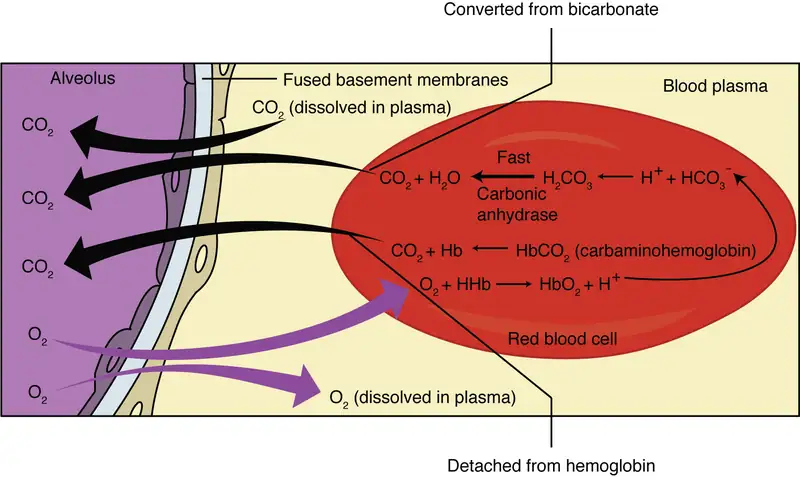
Although the solubility of oxygen in blood is not high, there is a drastic difference in the partial pressure of oxygen in the alveoli versus in the blood of the pulmonary capillaries. This difference is about 64 mm Hg: The partial pressure of oxygen in the alveoli is about 104 mm Hg, whereas its partial pressure in the blood of the capillary is about 40 mm Hg. This large difference in partial pressure creates a very strong pressure gradient that causes oxygen to rapidly cross the respiratory membrane from the alveoli into the blood.
The partial pressure of carbon dioxide is also different between the alveolar air and the blood of the capillary. However, the partial pressure difference is less than that of oxygen, about 5 mm Hg. The partial pressure of carbon dioxide in the blood of the capillary is about 45 mm Hg, whereas its partial pressure in the alveoli is about 40 mm Hg. However, the solubility of carbon dioxide is much greater than that of oxygen—by a factor of about 20—in both blood and alveolar fluids. As a result, the relative concentrations of oxygen and carbon dioxide that diffuse across the respiratory membrane are similar.
Internal Respiration¶
Internal respiration is gas exchange that occurs at the level of body tissues (Figure 22.23). Similar to external respiration, internal respiration also occurs as simple diffusion due to a partial pressure gradient. However, the partial pressure gradients are opposite of those present at the respiratory membrane. The partial pressure of oxygen in tissues is low, about 40 mm Hg, because oxygen is continuously used for cellular respiration. In contrast, the partial pressure of oxygen in the blood is about 100 mm Hg. This creates a pressure gradient that causes oxygen to dissociate from hemoglobin, diffuse out of the blood, cross the interstitial space, and enter the tissue. Hemoglobin that has little oxygen bound to it loses much of its brightness, so that blood returning to the heart is more burgundy in color.
Considering that cellular respiration continuously produces carbon dioxide, the partial pressure of carbon dioxide is lower in the blood than it is in the tissue, causing carbon dioxide to diffuse out of the tissue, cross the interstitial fluid, and enter the blood. It is then carried back to the lungs either bound to hemoglobin, dissolved in plasma, or in a converted form. By the time blood returns to the heart, the partial pressure of oxygen has returned to about 40 mm Hg, and the partial pressure of carbon dioxide has returned to about 45 mm Hg. The blood is then pumped back to the lungs to be oxygenated once again during external respiration.
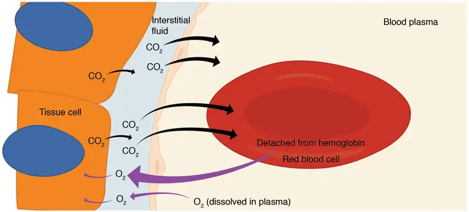
Everyday Connection: Hyperbaric Chamber Treatment
A type of device used in some areas of medicine that exploits the behavior of gases is hyperbaric chamber treatment. A hyperbaric chamber is a unit that can be sealed and expose a patient to either 100 percent oxygen with increased pressure or a mixture of gases that includes a higher concentration of oxygen than normal atmospheric air, also at a higher partial pressure than the atmosphere. There are two major types of chambers: monoplace and multiplace. Monoplace chambers are typically for one patient, and the staff tending to the patient observes the patient from outside of the chamber (Figure 22.24). Some facilities have special monoplace hyperbaric chambers that allow multiple patients to be treated at once, usually in a sitting or reclining position, to help ease feelings of isolation or claustrophobia. Multiplace chambers are large enough for multiple patients to be treated at one time, and the staff attending these patients is present inside the chamber. In a multiplace chamber, patients are often treated with air via a mask or hood, and the chamber is pressurized.
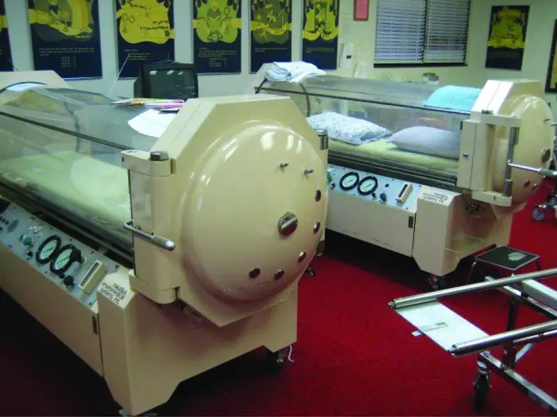
Hyperbaric chamber treatment is based on the behavior of gases. As you recall, gases move from a region of higher partial pressure to a region of lower partial pressure. In a hyperbaric chamber, the atmospheric pressure is increased, causing a greater amount of oxygen than normal to diffuse into the bloodstream of the patient. Hyperbaric chamber therapy is used to treat a variety of medical problems, such as wound and graft healing, anaerobic bacterial infections, and carbon monoxide poisoning. Exposure to and poisoning by carbon monoxide is difficult to reverse, because hemoglobin’s affinity for carbon monoxide is much stronger than its affinity for oxygen, causing carbon monoxide to replace oxygen in the blood. Hyperbaric chamber therapy can treat carbon monoxide poisoning, because the increased atmospheric pressure causes more oxygen to diffuse into the bloodstream. At this increased pressure and increased concentration of oxygen, carbon monoxide is displaced from hemoglobin. Another example is the treatment of anaerobic bacterial infections, which are created by bacteria that cannot or prefer not to live in the presence of oxygen. An increase in blood and tissue levels of oxygen helps to kill the anaerobic bacteria that are responsible for the infection, as oxygen is toxic to anaerobic bacteria. For wounds and grafts, the chamber stimulates the healing process by increasing energy production needed for repair. Increasing oxygen transport allows cells to ramp up cellular respiration and thus ATP production, the energy needed to build new structures.
22.5 Transport of Gases¶
Learning Objectives
By the end of this section, you will be able to:
- Describe the principles of oxygen transport
- Describe the structure of hemoglobin
- Compare and contrast fetal and adult hemoglobin
- Describe the principles of carbon dioxide transport
The other major activity in the lungs is the process of respiration, the process of gas exchange. The function of respiration is to provide oxygen for use by body cells during cellular respiration and to eliminate carbon dioxide, a waste product of cellular respiration, from the body. In order for the exchange of oxygen and carbon dioxide to occur, both gases must be transported between the external and internal respiration sites. Although carbon dioxide is more soluble than oxygen in blood, both gases require a specialized transport system for the majority of the gas molecules to be moved between the lungs and other tissues.
Oxygen Transport in the Blood¶
Even though oxygen is transported via the blood, you may recall that oxygen is not very soluble in liquids. A small amount of oxygen does dissolve in the blood and is transported in the bloodstream, but it is only about 1.5% of the total amount. The majority of oxygen molecules are carried from the lungs to the body’s tissues by a specialized transport system, which relies on the erythrocyte—the red blood cell. Erythrocytes contain a metalloprotein, hemoglobin, which serves to bind oxygen molecules to the erythrocyte (Figure 22.25). Heme is the portion of hemoglobin that contains iron, and it is heme that binds oxygen. Each hemoglobin molecule contains four iron-containing heme molecules, and because of this, one hemoglobin molecule is capable of carrying up to four molecules of oxygen. As oxygen diffuses across the respiratory membrane from the alveolus to the capillary, it also diffuses into the red blood cell and is bound by hemoglobin. The following reversible chemical reaction describes the production of the final product, oxyhemoglobin (HbO2), which is formed when oxygen binds to hemoglobin. Oxyhemoglobin is a bright red-colored molecule that contributes to the bright red color of oxygenated blood.
In this formula, Hb represents reduced hemoglobin, that is, hemoglobin that does not have oxygen bound to it. There are multiple factors involved in how readily heme binds to and dissociates from oxygen, which will be discussed in the subsequent sections.
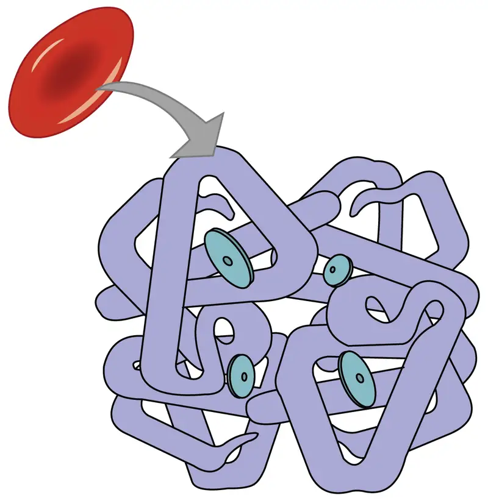
Function of Hemoglobin¶
Hemoglobin is composed of subunits, a protein structure that is referred to as a quaternary structure. Each of the four subunits that make up hemoglobin is arranged in a ring-like fashion, with an iron atom covalently bound to the heme in the center of each subunit. Binding of the first oxygen molecule causes a conformational change in hemoglobin that allows the second molecule of oxygen to bind more readily. As each molecule of oxygen is bound, it further facilitates the binding of the next molecule, until all four heme sites are occupied by oxygen. The opposite occurs as well: After the first oxygen molecule dissociates and is “dropped off” at the tissues, the next oxygen molecule dissociates more readily. When all four heme sites are occupied, the hemoglobin is said to be saturated. When one to three heme sites are occupied, the hemoglobin is said to be partially saturated. Therefore, when considering the blood as a whole, the percent of the available heme units that are bound to oxygen at a given time is called hemoglobin saturation. Hemoglobin saturation of 100 percent means that every heme unit in all of the erythrocytes of the body is bound to oxygen. In a healthy individual with normal hemoglobin levels, hemoglobin saturation generally ranges from 95 percent to 99 percent.
Oxygen Dissociation from Hemoglobin¶
Partial pressure is an important aspect of the binding of oxygen to and disassociation from heme. An oxygen–hemoglobin dissociation curve is a graph that describes the relationship of partial pressure to the binding of oxygen to heme and its subsequent dissociation from heme (Figure 22.26). Remember that gases travel from an area of higher partial pressure to an area of lower partial pressure. In addition, the affinity of an oxygen molecule for heme increases as more oxygen molecules are bound. Therefore, in the oxygen–hemoglobin saturation curve, as the partial pressure of oxygen increases, a proportionately greater number of oxygen molecules are bound by heme. Not surprisingly, the oxygen–hemoglobin saturation/dissociation curve also shows that the lower the partial pressure of oxygen, the fewer oxygen molecules are bound to heme. As a result, the partial pressure of oxygen plays a major role in determining the degree of binding of oxygen to heme at the site of the respiratory membrane, as well as the degree of dissociation of oxygen from heme at the site of body tissues.
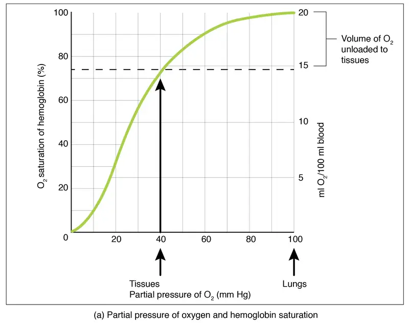
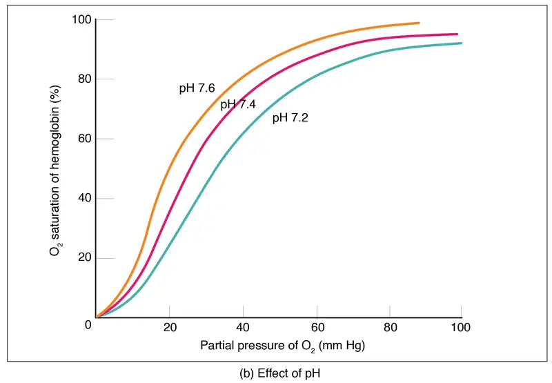
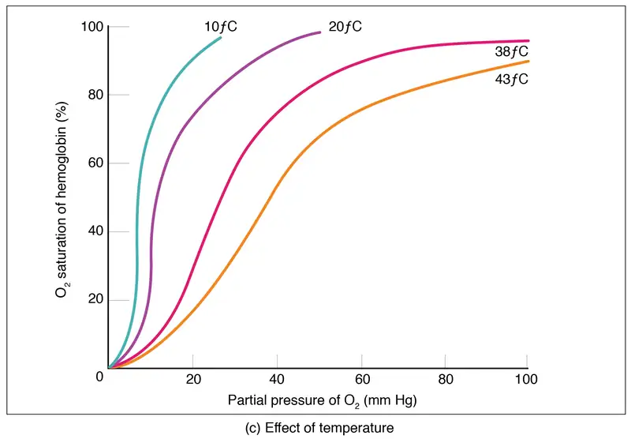
The mechanisms behind the oxygen–hemoglobin saturation/dissociation curve also serve as automatic control mechanisms that regulate how much oxygen is delivered to different tissues throughout the body. This is important because some tissues have a higher metabolic rate than others. Highly active tissues, such as muscle, rapidly use oxygen to produce ATP, lowering the partial pressure of oxygen in the tissue to about 20 mm Hg. The partial pressure of oxygen inside capillaries is about 100 mm Hg, so the difference between the two becomes quite high, about 80 mm Hg. As a result, a greater number of oxygen molecules dissociate from hemoglobin and enter the tissues. The reverse is true of tissues, such as adipose (body fat), which have lower metabolic rates. Because less oxygen is used by these cells, the partial pressure of oxygen within such tissues remains relatively high, resulting in fewer oxygen molecules dissociating from hemoglobin and entering the tissue interstitial fluid. Although venous blood is said to be deoxygenated, some oxygen is still bound to hemoglobin in its red blood cells. This provides an oxygen reserve that can be used when tissues suddenly demand more oxygen.
Factors other than partial pressure also affect the oxygen–hemoglobin saturation/dissociation curve. For example, a higher temperature promotes hemoglobin and oxygen to dissociate faster, whereas a lower temperature inhibits dissociation (see Figure 22.26, middle). However, the human body tightly regulates temperature, so this factor may not affect gas exchange throughout the body. The exception to this is in highly active tissues, which may release a larger amount of energy than is given off as heat. As a result, oxygen readily dissociates from hemoglobin, which is a mechanism that helps to provide active tissues with more oxygen.
Certain hormones, such as androgens, epinephrine, thyroid hormones, and growth hormone, can affect the oxygen–hemoglobin saturation/disassociation curve by stimulating the production of a compound called 2,3-bisphosphoglycerate (BPG) by erythrocytes. BPG is a byproduct of glycolysis. Because erythrocytes do not contain mitochondria, glycolysis is the sole method by which these cells produce ATP. BPG promotes the disassociation of oxygen from hemoglobin. Therefore, the greater the concentration of BPG, the more readily oxygen dissociates from hemoglobin, despite its partial pressure.
The pH of the blood is another factor that influences the oxygen–hemoglobin saturation/dissociation curve (see Figure 22.26). The Bohr effect is a phenomenon that arises from the relationship between pH and oxygen’s affinity for hemoglobin: A lower, more acidic pH promotes oxygen dissociation from hemoglobin. In contrast, a higher, or more basic, pH inhibits oxygen dissociation from hemoglobin. The greater the amount of carbon dioxide in the blood, the more molecules that must be converted, which in turn generates hydrogen ions and thus lowers blood pH. Furthermore, blood pH may become more acidic when certain byproducts of cell metabolism, such as lactic acid, carbonic acid, and carbon dioxide, are released into the bloodstream.
Hemoglobin of the Fetus¶
The fetus has its own circulation with its own erythrocytes; however, it is dependent on the pregnant person for oxygen. Blood is supplied to the fetus by way of the umbilical cord, which is connected to the placenta and separated from maternal blood by the chorion. The mechanism of gas exchange at the chorion is similar to gas exchange at the respiratory membrane. However, the partial pressure of oxygen is lower in the maternal blood in the placenta, at about 35 to 50 mm Hg, than it is in maternal arterial blood. The difference in partial pressures between maternal and fetal blood is not large, as the partial pressure of oxygen in fetal blood at the placenta is about 20 mm Hg. Therefore, there is not as much diffusion of oxygen into the fetal blood supply. The fetus’ hemoglobin overcomes this problem by having a greater affinity for oxygen than maternal hemoglobin (Figure 22.27). Both fetal and adult hemoglobin have four subunits, but two of the subunits of fetal hemoglobin have a different structure that causes fetal hemoglobin to have a greater affinity for oxygen than does adult hemoglobin.
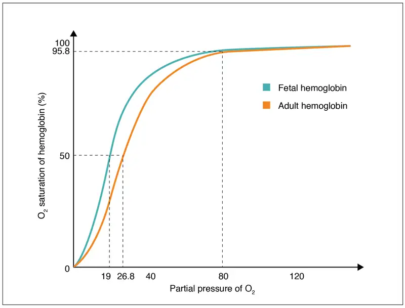
Carbon Dioxide Transport in the Blood¶
Carbon dioxide is transported by three major mechanisms. The first mechanism of carbon dioxide transport is by blood plasma, as some carbon dioxide molecules dissolve in the blood. The second mechanism is transport in the form of bicarbonate (HCO3–), which also dissolves in plasma. The third mechanism of carbon dioxide transport is similar to the transport of oxygen by erythrocytes (Figure 22.28).
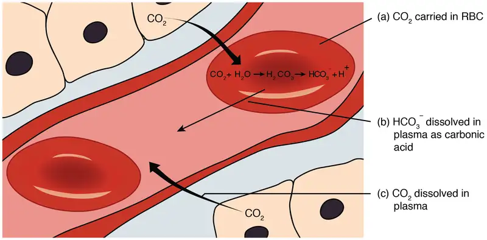
Dissolved Carbon Dioxide¶
Although carbon dioxide is not considered to be highly soluble in blood, a small fraction—about 7 to 10 percent—of the carbon dioxide that diffuses into the blood from the tissues dissolves in plasma. The dissolved carbon dioxide then travels in the bloodstream and when the blood reaches the pulmonary capillaries, the dissolved carbon dioxide diffuses across the respiratory membrane into the alveoli, where it is then exhaled during pulmonary ventilation.
Bicarbonate Buffer¶
A large fraction—about 70 percent—of the carbon dioxide molecules that diffuse into the blood is transported to the lungs as bicarbonate. Most bicarbonate is produced in erythrocytes after carbon dioxide diffuses into the capillaries, and subsequently into red blood cells. Carbonic anhydrase (CA) causes carbon dioxide and water to form carbonic acid (H2CO3), which dissociates into two ions: bicarbonate (HCO3–) and hydrogen (H+). The following formula depicts this reaction:
Bicarbonate tends to build up in the erythrocytes, so that there is a greater concentration of bicarbonate in the erythrocytes than in the surrounding blood plasma. As a result, some of the bicarbonate will leave the erythrocytes and move down its concentration gradient into the plasma in exchange for chloride (Cl–) ions. This phenomenon is referred to as the chloride shift and occurs because by exchanging one negative ion for another negative ion, neither the electrical charge of the erythrocytes nor that of the blood is altered.
At the pulmonary capillaries, the chemical reaction that produced bicarbonate (shown above) is reversed, and carbon dioxide and water are the products. Much of the bicarbonate in the plasma re-enters the erythrocytes in exchange for chloride ions. Hydrogen ions and bicarbonate ions join to form carbonic acid, which is converted into carbon dioxide and water by carbonic anhydrase. Carbon dioxide diffuses out of the erythrocytes and into the plasma, where it can further diffuse across the respiratory membrane into the alveoli to be exhaled during pulmonary ventilation.
Carbaminohemoglobin¶
About 20 percent of carbon dioxide is bound by hemoglobin and is transported to the lungs. Carbon dioxide does not bind to iron as oxygen does; instead, carbon dioxide binds amino acid moieties on the globin portions of hemoglobin to form carbaminohemoglobin, which forms when hemoglobin and carbon dioxide bind. When hemoglobin is not transporting oxygen, it tends to have a bluish-purple tone to it, creating the darker maroon color typical of deoxygenated blood. The following formula depicts this reversible reaction:
Similar to the transport of oxygen by heme, the binding and dissociation of carbon dioxide to and from hemoglobin is dependent on the partial pressure of carbon dioxide. Because carbon dioxide is released from the lungs, blood that leaves the lungs and reaches body tissues has a lower partial pressure of carbon dioxide than is found in the tissues. As a result, carbon dioxide leaves the tissues because of its higher partial pressure, enters the blood, and then moves into red blood cells, binding to hemoglobin. In contrast, in the pulmonary capillaries, the partial pressure of carbon dioxide is high compared to within the alveoli. As a result, carbon dioxide dissociates readily from hemoglobin and diffuses across the respiratory membrane into the air.
In addition to the partial pressure of carbon dioxide, the oxygen saturation of hemoglobin and the partial pressure of oxygen in the blood also influence the affinity of hemoglobin for carbon dioxide. The Haldane effect is a phenomenon that arises from the relationship between the partial pressure of oxygen and the affinity of hemoglobin for carbon dioxide. Hemoglobin that is saturated with oxygen does not readily bind carbon dioxide. However, when oxygen is not bound to heme and the partial pressure of oxygen is low, hemoglobin readily binds to carbon dioxide.
Interactive
Watch this video to see the transport of oxygen from the lungs to the tissues. Why is oxygenated blood bright red, whereas deoxygenated blood tends to be more of a purple color?
22.6 Modifications in Respiratory Functions¶
Learning Objectives
By the end of this section, you will be able to:
- Define the terms hyperpnea and hyperventilation
- Describe the effect of exercise on the respiratory system
- Describe the effect of high altitude on the respiratory system
- Discuss the process of acclimatization
At rest, the respiratory system performs its functions at a constant, rhythmic pace, as regulated by the respiratory centers of the brain. At this pace, ventilation provides sufficient oxygen to all the tissues of the body. However, there are times that the respiratory system must alter the pace of its functions in order to accommodate the oxygen demands of the body.
Hyperpnea¶
Hyperpnea is an increased depth and rate of ventilation to meet an increase in oxygen demand as might be seen in exercise or disease, particularly diseases that target the respiratory or digestive tracts. This does not significantly alter blood oxygen or carbon dioxide levels, but merely increases the depth and rate of ventilation to meet the demand of the cells. In contrast, hyperventilation is an increased ventilation rate that is independent of the cellular oxygen needs and leads to abnormally low blood carbon dioxide levels and high (alkaline) blood pH.
Interestingly, exercise does not cause hyperpnea as one might think. Muscles that perform work during exercise do increase their demand for oxygen, stimulating an increase in ventilation. However, hyperpnea during exercise appears to occur before a drop in oxygen levels within the muscles can occur. Therefore, hyperpnea must be driven by other mechanisms, either instead of or in addition to a drop in oxygen levels. The exact mechanisms behind exercise hyperpnea are not well understood, and some hypotheses are somewhat controversial. However, in addition to low oxygen, high carbon dioxide, and low pH levels, there appears to be a complex interplay of factors related to the nervous system and the respiratory centers of the brain.
First, a conscious decision to partake in exercise, or another form of physical exertion, results in a psychological stimulus that may trigger the respiratory centers of the brain to increase ventilation. In addition, the respiratory centers of the brain may be stimulated through the activation of motor neurons that innervate muscle groups that are involved in the physical activity. Finally, physical exertion stimulates proprioceptors, which are receptors located within the muscles, joints, and tendons, which sense movement and stretching; proprioceptors thus create a stimulus that may also trigger the respiratory centers of the brain. These neural factors are consistent with the sudden increase in ventilation that is observed immediately as exercise begins. Because the respiratory centers are stimulated by psychological, motor neuron, and proprioceptor inputs throughout exercise, the fact that there is also a sudden decrease in ventilation immediately after the exercise ends when these neural stimuli cease, further supports the idea that they are involved in triggering the changes of ventilation.
High Altitude Effects¶
An increase in altitude results in a decrease in atmospheric pressure. Although the proportion of oxygen relative to gases in the atmosphere remains at 21 percent, its partial pressure decreases (Table 22.4). As a result, it is more difficult for a body to achieve the same level of oxygen saturation at high altitude than at low altitude, due to lower atmospheric pressure. In fact, hemoglobin saturation is lower at high altitudes compared to hemoglobin saturation at sea level. For example, hemoglobin saturation is about 67 percent at 19,000 feet above sea level, whereas it reaches about 98 percent at sea level.
Table 22.4
| Partial Pressure of Oxygen at Different Altitudes | |||
|---|---|---|---|
| Example location | Altitude (feet above sea level) | Atmospheric pressure (mm Hg) | Partial pressure of oxygen (mm Hg) |
| New York City, New York | 0 | 760 | 159 |
| Boulder, Colorado | 5000 | 632 | 133 |
| Aspen, Colorado | 8000 | 565 | 118 |
| Pike’s Peak, Colorado | 14,000 | 447 | 94 |
| Denali (Mt. McKinley), Alaska | 20,000 | 350 | 73 |
| Mt. Everest, Tibet | 29,000 | 260 | 54 |
As you recall, partial pressure is extremely important in determining how much gas can cross the respiratory membrane and enter the blood of the pulmonary capillaries. A lower partial pressure of oxygen means that there is a smaller difference in partial pressures between the alveoli and the blood, so less oxygen crosses the respiratory membrane. As a result, fewer oxygen molecules are bound by hemoglobin. Despite this, the tissues of the body still receive a sufficient amount of oxygen during rest at high altitudes. This is due to two major mechanisms. First, the number of oxygen molecules that enter the tissue from the blood is nearly equal between sea level and high altitudes. At sea level, hemoglobin saturation is higher, but only a quarter of the oxygen molecules are actually released into the tissue. At high altitudes, a greater proportion of molecules of oxygen are released into the tissues. Secondly, at high altitudes, a greater amount of BPG is produced by erythrocytes, which enhances the dissociation of oxygen from hemoglobin. Physical exertion, such as skiing or hiking, can lead to altitude sickness due to the low amount of oxygen reserves in the blood at high altitudes. At sea level, there is a large amount of oxygen reserve in venous blood (even though venous blood is thought of as “deoxygenated”) from which the muscles can draw during physical exertion. Because the oxygen saturation is much lower at higher altitudes, this venous reserve is small, resulting in pathological symptoms of low blood oxygen levels. You may have heard that it is important to drink more water when traveling at higher altitudes than you are accustomed to. This is because your body will increase micturition (urination) at high altitudes to counteract the effects of lower oxygen levels. By removing fluids, blood plasma levels drop but not the total number of erythrocytes. In this way, the overall concentration of erythrocytes in the blood increases, which helps tissues obtain the oxygen they need.
Acute mountain sickness (AMS), or altitude sickness, is a condition that results from acute exposure to high altitudes due to a low partial pressure of oxygen at high altitudes. AMS typically can occur at 2400 meters (8000 feet) above sea level. AMS is a result of low blood oxygen levels, as the body has acute difficulty adjusting to the low partial pressure of oxygen. In serious cases, AMS can cause pulmonary or cerebral edema. Symptoms of AMS include nausea, vomiting, fatigue, lightheadedness, drowsiness, feeling disoriented, increased pulse, and nosebleeds. The only treatment for AMS is descending to a lower altitude; however, pharmacologic treatments and supplemental oxygen can improve symptoms. AMS can be prevented by slowly ascending to the desired altitude, allowing the body to acclimate, as well as maintaining proper hydration.
Acclimatization¶
Especially in situations where the ascent occurs too quickly, traveling to areas of high altitude can cause AMS. Acclimatization is the process of adjustment that the respiratory system makes due to chronic exposure to a high altitude. Over a period of time, the body adjusts to accommodate the lower partial pressure of oxygen. The low partial pressure of oxygen at high altitudes results in a lower oxygen saturation level of hemoglobin in the blood. In turn, the tissue levels of oxygen are also lower. As a result, the kidneys are stimulated to produce the hormone erythropoietin (EPO), which stimulates the production of erythrocytes, resulting in a greater number of circulating erythrocytes in an individual at a high altitude over a long period. With more red blood cells, there is more hemoglobin to help transport the available oxygen. Even though there is low saturation of each hemoglobin molecule, there will be more hemoglobin present, and therefore more oxygen in the blood. Over time, this allows the person to partake in physical exertion without developing AMS.
22.7 Embryonic Development of the Respiratory System¶
Learning Objectives
By the end of this section, you will be able to:
- Create a timeline of the phases of respiratory development in the fetus
- Propose reasons for fetal breathing movements
- Explain how the lungs become inflated after birth
Development of the respiratory system begins early in the fetus. It is a complex process that includes many structures, most of which arise from the endoderm. Towards the end of development, the fetus can be observed making breathing movements. Until birth, however, the pregnant person provides all of the oxygen to the fetus as well as removes all of the fetal carbon dioxide via the placenta.
Time Line¶
The development of the respiratory system begins at about week 4 of gestation. By week 28, enough alveoli have matured that a baby born prematurely at this time can usually breathe on its own. The respiratory system, however, is not fully developed until early childhood, when a full complement of mature alveoli is present.
Weeks 4–7¶
Respiratory development in the embryo begins around week 4. Ectodermal tissue from the anterior head region invaginates posteriorly to form olfactory pits, which fuse with endodermal tissue of the developing pharynx. An olfactory pit is one of a pair of structures that will enlarge to become the nasal cavity. At about this same time, the lung bud forms. The lung bud is a dome-shaped structure composed of tissue that bulges from the foregut. The foregut is endoderm just inferior to the pharyngeal pouches. The laryngotracheal bud is a structure that forms from the longitudinal extension of the lung bud as development progresses. The portion of this structure nearest the pharynx becomes the trachea, whereas the distal end becomes more bulbous, forming bronchial buds. A bronchial bud is one of a pair of structures that will eventually become the bronchi and all other lower respiratory structures (Figure 22.29).
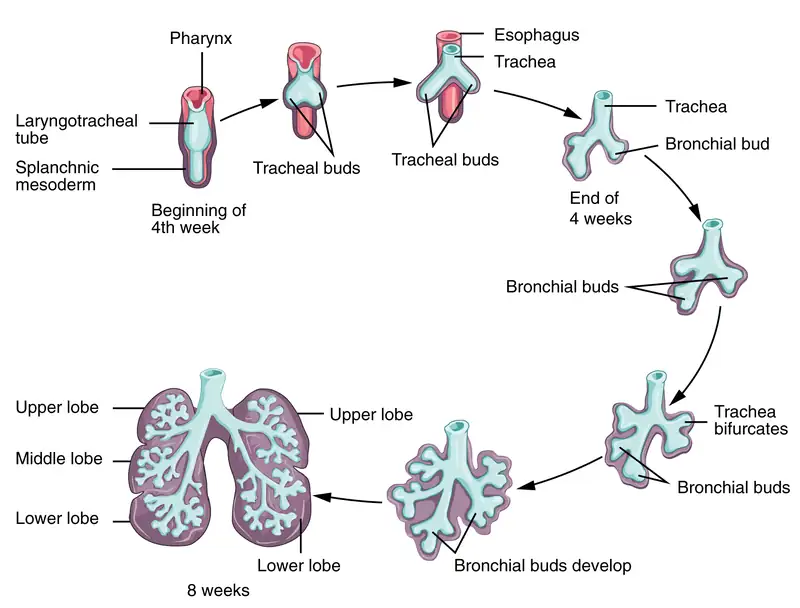
Weeks 7–16¶
Bronchial buds continue to branch as development progresses until all of the segmental bronchi have been formed. Beginning around week 13, the lumens of the bronchi begin to expand in diameter. By week 16, respiratory bronchioles form. The fetus now has all major lung structures involved in the airway.
Weeks 16–24¶
Once the respiratory bronchioles form, further development includes extensive vascularization, or the development of the blood vessels, as well as the formation of alveolar ducts and alveolar precursors. At about week 19, the respiratory bronchioles have formed. In addition, cells lining the respiratory structures begin to differentiate to form type I and type II pneumocytes. Once type II cells have differentiated, they begin to secrete small amounts of pulmonary surfactant. Around week 20, fetal breathing movements may begin.
Weeks 24–Term¶
Major growth and maturation of the respiratory system occurs from week 24 until term. More alveolar precursors develop, and larger amounts of pulmonary surfactant are produced. Surfactant levels are not generally adequate to create effective lung compliance until about the eighth month of pregnancy. The respiratory system continues to expand, and the surfaces that will form the respiratory membrane develop further. At this point, pulmonary capillaries have formed and continue to expand, creating a large surface area for gas exchange. The major milestone of respiratory development occurs at around week 28, when sufficient alveolar precursors have matured so that a baby born prematurely at this time can usually breathe on its own. However, alveoli continue to develop and mature into childhood. A full complement of functional alveoli does not appear until around 8 years of age.
Fetal “Breathing”¶
Although the function of fetal breathing movements is not entirely clear, they can be observed starting at 20–21 weeks of development. Fetal breathing movements involve muscle contractions that cause the inhalation of amniotic fluid and exhalation of the same fluid, with pulmonary surfactant and mucus. Fetal breathing movements are not continuous and may include periods of frequent movements and periods of no movements. Maternal factors can influence the frequency of breathing movements. For example, high blood glucose levels, called hyperglycemia, can boost the number of breathing movements. Conversely, low blood glucose levels, called hypoglycemia, can reduce the number of fetal breathing movements. Tobacco use is also known to lower fetal breathing rates. Fetal breathing may help tone the muscles in preparation for breathing movements once the fetus is born. It may also help the alveoli to form and mature. Fetal breathing movements are considered a sign of robust health.
Birth¶
Prior to birth, the lungs are filled with amniotic fluid, mucus, and surfactant. As the fetus is squeezed through the birth canal, the fetal thoracic cavity is compressed, expelling much of this fluid. Some fluid remains, however, but is rapidly absorbed by the body shortly after birth. The first inhalation occurs within 10 seconds after birth and not only serves as the first inspiration, but also acts to inflate the lungs. Pulmonary surfactant is critical for inflation to occur, as it reduces the surface tension of the alveoli. Preterm birth around 26 weeks frequently results in severe respiratory distress, although with current medical advancements, some babies may survive. Prior to 26 weeks, sufficient pulmonary surfactant is not produced, and the surfaces for gas exchange have not formed adequately; therefore, survival is low.
Disorders of the Respiratory System: Respiratory Distress Syndrome
Respiratory distress syndrome (RDS) primarily occurs in infants born prematurely. Up to 50 percent of infants born between 26 and 28 weeks and fewer than 30 percent of infants born between 30 and 31 weeks develop RDS. RDS results from insufficient production of pulmonary surfactant, thereby preventing the lungs from properly inflating at birth. A small amount of pulmonary surfactant is produced beginning at around 20 weeks; however, this is not sufficient for inflation of the lungs. As a result, dyspnea occurs and gas exchange cannot be performed properly. Blood oxygen levels are low, whereas blood carbon dioxide levels and pH are high.
The primary cause of RDS is premature birth, which may be due to a variety of known or unknown causes. Other risk factors include gestational diabetes, cesarean delivery, second-born twins, and family history of RDS. The presence of RDS can lead to other serious disorders, such as septicemia (infection of the blood) or pulmonary hemorrhage. Therefore, it is important that RDS is immediately recognized and treated to prevent death and reduce the risk of developing other disorders.
Medical advances have resulted in an improved ability to treat RDS and support the infant until proper lung development can occur. At the time of delivery, treatment may include resuscitation and intubation if the infant does not breathe on their own. These infants would need to be placed on a ventilator to mechanically assist with the breathing process. If spontaneous breathing occurs, application of nasal continuous positive airway pressure (CPAP) may be required. In addition, pulmonary surfactant is typically administered. Death due to RDS has been reduced by 50 percent due to the introduction of pulmonary surfactant therapy. Other therapies may include corticosteroids, supplemental oxygen, and assisted ventilation. Supportive therapies, such as temperature regulation, nutritional support, and antibiotics, may be administered to the premature infant as well.
Chapter Review¶
Key Terms¶
- acclimatization
- process of adjustment that the respiratory system makes due to chronic exposure to high altitudes
- acute mountain sickness (AMS)
- condition that occurs a result of acute exposure to high altitude due to a low partial pressure of oxygen
- ala
- (plural = alae) small, flaring structure of a nostril that forms the lateral side of the nares
- alar cartilage
- cartilage that supports the apex of the nose and helps shape the nares; it is connected to the septal cartilage and connective tissue of the alae
- alveolar dead space
- air space within alveoli that are unable to participate in gas exchange
- alveolar duct
- small tube that leads from the terminal bronchiole to the respiratory bronchiole and is the point of attachment for alveoli
- alveolar macrophage
- immune system cell of the alveolus that removes debris and pathogens
- alveolar pore
- opening that allows airflow between neighboring alveoli
- alveolar sac
- cluster of alveoli
- alveolus
- small, grape-like sac that performs gas exchange in the lungs
- anatomical dead space
- air space present in the airway that never reaches the alveoli and therefore never participates in gas exchange
- apex
- tip of the external nose
- apneustic center
- network of neurons within the pons that stimulate the neurons in the dorsal respiratory group; controls the depth of inspiration
- atmospheric pressure
- amount of force that is exerted by gases in the air surrounding any given surface
- Bohr effect
- relationship between blood pH and oxygen dissociation from hemoglobin
- Boyle’s law
- relationship between volume and pressure as described by the formula: P1V1 = P2V2
- bridge
- portion of the external nose that lies in the area of the nasal bones
- bronchial bud
- structure in the developing embryo that forms when the laryngotracheal bud extends and branches to form two bulbous structures
- bronchial tree
- collective name for the multiple branches of the bronchi and bronchioles of the respiratory system
- bronchiole
- branch of bronchi that are 1 mm or less in diameter and terminate at alveolar sacs
- bronchoconstriction
- decrease in the size of the bronchiole due to contraction of the muscular wall
- bronchodilation
- increase in the size of the bronchiole due to relaxation of the muscular wall
- bronchus
- tube connected to the trachea that branches into many subsidiaries and provides a passageway for air to enter and leave the lungs
- carbaminohemoglobin
- bound form of hemoglobin and carbon dioxide
- carbonic anhydrase (CA)
- enzyme that catalyzes the reaction that causes carbon dioxide and water to form carbonic acid
- cardiac notch
- indentation on the surface of the left lung that allows space for the heart
- central chemoreceptor
- one of the specialized receptors that are located in the brain that sense changes in hydrogen ion, oxygen, or carbon dioxide concentrations in the brain
- chloride shift
- facilitated diffusion that exchanges bicarbonate (HCO3–) with chloride (Cl–) ions
- conducting zone
- region of the respiratory system that includes the organs and structures that provide passageways for air and are not directly involved in gas exchange
- cricoid cartilage
- portion of the larynx composed of a ring of cartilage with a wide posterior region and a thinner anterior region; attached to the esophagus
- Dalton’s law
- statement of the principle that a specific gas type in a mixture exerts its own pressure, as if that specific gas type was not part of a mixture of gases
- dorsal respiratory group (DRG)
- region of the medulla oblongata that stimulates the contraction of the diaphragm and intercostal muscles to induce inspiration
- dorsum nasi
- intermediate portion of the external nose that connects the bridge to the apex and is supported by the nasal bone
- epiglottis
- leaf-shaped piece of elastic cartilage that is a portion of the larynx that swings to close the trachea during swallowing
- expiration
- (also, exhalation) process that causes the air to leave the lungs
- expiratory reserve volume (ERV)
- amount of air that can be forcefully exhaled after a normal tidal exhalation
- external nose
- region of the nose that is easily visible to others
- external respiration
- gas exchange that occurs in the alveoli
- fauces
- portion of the posterior oral cavity that connects the oral cavity to the oropharynx
- fibroelastic membrane
- specialized membrane that connects the ends of the C-shape cartilage in the trachea; contains smooth muscle fibers
- forced breathing
- (also, hyperpnea) mode of breathing that occurs during exercise or by active thought that requires muscle contraction for both inspiration and expiration
- foregut
- endoderm of the embryo towards the head region
- functional residual capacity (FRC)
- sum of ERV and RV, which is the amount of air that remains in the lungs after a tidal expiration
- glottis
- opening between the vocal folds through which air passes when producing speech
- Haldane effect
- relationship between the partial pressure of oxygen and the affinity of hemoglobin for carbon dioxide
- Henry’s law
- statement of the principle that the concentration of gas in a liquid is directly proportional to the solubility and partial pressure of that gas
- hilum
- concave structure on the mediastinal surface of the lungs where blood vessels, lymphatic vessels, nerves, and a bronchus enter the lung
- hyperpnea
- increased rate and depth of ventilation due to an increase in oxygen demand that does not significantly alter blood oxygen or carbon dioxide levels
- hyperventilation
- increased ventilation rate that leads to abnormally low blood carbon dioxide levels and high (alkaline) blood pH
- inspiration
- (also, inhalation) process that causes air to enter the lungs
- inspiratory capacity (IC)
- sum of the TV and IRV, which is the amount of air that can maximally be inhaled past a tidal expiration
- inspiratory reserve volume (IRV)
- amount of air that enters the lungs due to deep inhalation past the tidal volume
- internal respiration
- gas exchange that occurs at the level of body tissues
- intra-alveolar pressure
- (intrapulmonary pressure) pressure of the air within the alveoli
- intrapleural pressure
- pressure of the air within the pleural cavity
- laryngeal prominence
- region where the two lamine of the thyroid cartilage join, forming a protrusion known as “Adam’s apple”
- laryngopharynx
- portion of the pharynx bordered by the oropharynx superiorly and esophagus and trachea inferiorly; serves as a route for both air and food
- laryngotracheal
- bud forms from the lung bud, has a tracheal end and bulbous bronchial buds at the distal end
- larynx
- cartilaginous structure that produces the voice, prevents food and beverages from entering the trachea, and regulates the volume of air that enters and leaves the lungs
- lingual tonsil
- lymphoid tissue located at the base of the tongue
- lung
- organ of the respiratory system that performs gas exchange
- lung bud
- median dome that forms from the endoderm of the foregut
- meatus
- one of three recesses (superior, middle, and inferior) in the nasal cavity attached to the conchae that increase the surface area of the nasal cavity
- naris
- (plural = nares) opening of the nostrils
- nasal bone
- bone of the skull that lies under the root and bridge of the nose and is connected to the frontal and maxillary bones
- nasal septum
- wall composed of bone and cartilage that separates the left and right nasal cavities
- nasopharynx
- portion of the pharynx flanked by the conchae and oropharynx that serves as an airway
- olfactory pit
- invaginated ectodermal tissue in the anterior portion of the head region of an embryo that will form the nasal cavity
- oropharynx
- portion of the pharynx flanked by the nasopharynx, oral cavity, and laryngopharynx that is a passageway for both air and food
- oxygen–hemoglobin dissociation curve
- graph that describes the relationship of partial pressure to the binding and disassociation of oxygen to and from heme
- oxyhemoglobin
- (Hb–O2) bound form of hemoglobin and oxygen
- palatine tonsil
- one of the paired structures composed of lymphoid tissue located anterior to the uvula at the roof of isthmus of the fauces
- paranasal sinus
- one of the cavities within the skull that is connected to the conchae that serve to warm and humidify incoming air, produce mucus, and lighten the weight of the skull; consists of frontal, maxillary, sphenoidal, and ethmoidal sinuses
- parietal pleura
- outermost layer of the pleura that connects to the thoracic wall, mediastinum, and diaphragm
- partial pressure
- force exerted by each gas in a mixture of gases
- peripheral chemoreceptor
- one of the specialized receptors located in the aortic arch and carotid arteries that sense changes in pH, carbon dioxide, or oxygen blood levels
- pharyngeal tonsil
- structure composed of lymphoid tissue located in the nasopharynx
- pharynx
- region of the conducting zone that forms a tube of skeletal muscle lined with respiratory epithelium; located between the nasal conchae and the esophagus and trachea
- philtrum
- concave surface of the face that connects the apex of the nose to the top lip
- pleural cavity
- space between the visceral and parietal pleurae
- pleural fluid
- substance that acts as a lubricant for the visceral and parietal layers of the pleura during the movement of breathing
- pneumotaxic center
- network of neurons within the pons that inhibit the activity of the neurons in the dorsal respiratory group; controls rate of breathing
- pulmonary artery
- artery that arises from the pulmonary trunk and carries deoxygenated, arterial blood to the alveoli
- pulmonary plexus
- network of autonomic nervous system fibers found near the hilum of the lung
- pulmonary surfactant
- substance composed of phospholipids and proteins that reduces the surface tension of the alveoli; made by type II alveolar cells
- pulmonary ventilation
- exchange of gases between the lungs and the atmosphere; breathing
- quiet breathing
- (also, eupnea) mode of breathing that occurs at rest and does not require the cognitive thought of the individual
- residual volume (RV)
- amount of air that remains in the lungs after maximum exhalation
- respiratory bronchiole
- specific type of bronchiole that leads to alveolar sacs
- respiratory cycle
- one sequence of inspiration and expiration
- respiratory epithelium
- ciliated lining of much of the conducting zone that is specialized to remove debris and pathogens, and produce mucus
- respiratory membrane
- alveolar and capillary wall together, which form an air-blood barrier that facilitates the simple diffusion of gases
- respiratory rate
- total number of breaths taken each minute
- respiratory volume
- varying amounts of air within the lung at a given time
- respiratory zone
- includes structures of the respiratory system that are directly involved in gas exchange
- root
- region of the external nose between the eyebrows
- thoracic wall compliance
- ability of the thoracic wall to stretch while under pressure
- thyroid cartilage
- largest piece of cartilage that makes up the larynx and consists of two lamine
- tidal volume (TV)
- amount of air that normally enters the lungs during quiet breathing
- total dead space
- sum of the anatomical dead space and alveolar dead space
- total lung capacity (TLC)
- total amount of air that can be held in the lungs; sum of TV, ERV, IRV, and RV
- total pressure
- sum of all the partial pressures of a gaseous mixture
- trachea
- tube composed of cartilaginous rings and supporting tissue that connects the lung bronchi and the larynx; provides a route for air to enter and exit the lung
- trachealis muscle
- smooth muscle located in the fibroelastic membrane of the trachea
- transpulmonary pressure
- pressure difference between the intrapleural and intra-alveolar pressures
- true vocal cord
- one of the pair of folded, white membranes that have a free inner edge that oscillates as air passes through to produce sound
- type I alveolar cell
- squamous epithelial cells that are the major cell type in the alveolar wall; highly permeable to gases
- type II alveolar cell
- cuboidal epithelial cells that are the minor cell type in the alveolar wall; secrete pulmonary surfactant
- ventilation
- movement of air into and out of the lungs; consists of inspiration and expiration
- ventral respiratory group (VRG)
- region of the medulla oblongata that stimulates the contraction of the accessory muscles involved in respiration to induce forced inspiration and expiration
- vestibular fold
- part of the folded region of the glottis composed of mucous membrane; supports the epiglottis during swallowing
- visceral pleura
- innermost layer of the pleura that is superficial to the lungs and extends into the lung fissures
- vital capacity (VC)
- sum of TV, ERV, and IRV, which is all the volumes that participate in gas exchange
Chapter Review¶
22.1 Organs and Structures of the Respiratory System¶
The respiratory system is responsible for obtaining oxygen and getting rid of carbon dioxide, and aiding in speech production and in sensing odors. From a functional perspective, the respiratory system can be divided into two major areas: the conducting zone and the respiratory zone. The conducting zone consists of all of the structures that provide passageways for air to travel into and out of the lungs: the nasal cavity, pharynx, trachea, bronchi, and most bronchioles. The nasal passages contain the conchae and meatuses that expand the surface area of the cavity, which helps to warm and humidify incoming air, while removing debris and pathogens. The pharynx is composed of three major sections: the nasopharynx, which is continuous with the nasal cavity; the oropharynx, which borders the nasopharynx and the oral cavity; and the laryngopharynx, which borders the oropharynx, trachea, and esophagus. The respiratory zone includes the structures of the lung that are directly involved in gas exchange: the terminal bronchioles and alveoli.
The lining of the conducting zone is composed mostly of pseudostratified ciliated columnar epithelium with goblet cells. The mucus traps pathogens and debris, whereas beating cilia move the mucus superiorly toward the throat, where it is swallowed. As the bronchioles become smaller and smaller, and nearer the alveoli, the epithelium thins and is simple squamous epithelium in the alveoli. The endothelium of the surrounding capillaries, together with the alveolar epithelium, forms the respiratory membrane. This is a blood-air barrier through which gas exchange occurs by simple diffusion.
22.2 The Lungs¶
The lungs are the major organs of the respiratory system and are responsible for performing gas exchange. The lungs are paired and separated into lobes; The left lung consists of two lobes, whereas the right lung consists of three lobes. Blood circulation is very important, as blood is required to transport oxygen from the lungs to other tissues throughout the body. The function of the pulmonary circulation is to aid in gas exchange. The pulmonary artery provides deoxygenated blood to the capillaries that form respiratory membranes with the alveoli, and the pulmonary veins return newly oxygenated blood to the heart for further transport throughout the body. The lungs are innervated by the parasympathetic and sympathetic nervous systems, which coordinate the bronchodilation and bronchoconstriction of the airways. The lungs are enclosed by the pleura, a membrane that is composed of visceral and parietal pleural layers. The space between these two layers is called the pleural cavity. The mesothelial cells of the pleural membrane create pleural fluid, which serves as both a lubricant (to reduce friction during breathing) and as an adhesive to adhere the lungs to the thoracic wall (to facilitate movement of the lungs during ventilation).
22.3 The Process of Breathing¶
Pulmonary ventilation is the process of breathing, which is driven by pressure differences between the lungs and the atmosphere. Atmospheric pressure is the force exerted by gases present in the atmosphere. The force exerted by gases within the alveoli is called intra-alveolar (intrapulmonary) pressure, whereas the force exerted by gases in the pleural cavity is called intrapleural pressure. Typically, intrapleural pressure is lower, or negative to, intra-alveolar pressure. The difference in pressure between intrapleural and intra-alveolar pressures is called transpulmonary pressure. In addition, intra-alveolar pressure will equalize with the atmospheric pressure. Pressure is determined by the volume of the space occupied by a gas and is influenced by resistance. Air flows when a pressure gradient is created, from a space of higher pressure to a space of lower pressure. Boyle’s law describes the relationship between volume and pressure. A gas is at lower pressure in a larger volume because the gas molecules have more space to in which to move. The same quantity of gas in a smaller volume results in gas molecules crowding together, producing increased pressure.
Resistance is created by inelastic surfaces, as well as the diameter of the airways. Resistance reduces the flow of gases. The surface tension of the alveoli also influences pressure, as it opposes the expansion of the alveoli. However, pulmonary surfactant helps to reduce the surface tension so that the alveoli do not collapse during expiration. The ability of the lungs to stretch, called lung compliance, also plays a role in gas flow. The more the lungs can stretch, the greater the potential volume of the lungs. The greater the volume of the lungs, the lower the air pressure within the lungs.
Pulmonary ventilation consists of the process of inspiration (or inhalation), where air enters the lungs, and expiration (or exhalation), where air leaves the lungs. During inspiration, the diaphragm and external intercostal muscles contract, causing the rib cage to expand and move outward, and expanding the thoracic cavity and lung volume. This creates a lower pressure within the lung than that of the atmosphere, causing air to be drawn into the lungs. During expiration, the diaphragm and intercostals relax, causing the thorax and lungs to recoil. The air pressure within the lungs increases to above the pressure of the atmosphere, causing air to be forced out of the lungs. However, during forced exhalation, the internal intercostals and abdominal muscles may be involved in forcing air out of the lungs.
Respiratory volume describes the amount of air in a given space within the lungs, or which can be moved by the lung, and is dependent on a variety of factors. Tidal volume refers to the amount of air that enters the lungs during quiet breathing, whereas inspiratory reserve volume is the amount of air that enters the lungs when a person inhales past the tidal volume. Expiratory reserve volume is the extra amount of air that can leave with forceful expiration, following tidal expiration. Residual volume is the amount of air that is left in the lungs after expelling the expiratory reserve volume. Respiratory capacity is the combination of two or more volumes. Anatomical dead space refers to the air within the respiratory structures that never participates in gas exchange, because it does not reach functional alveoli. Respiratory rate is the number of breaths taken per minute, which may change during certain diseases or conditions.
Both respiratory rate and depth are controlled by the respiratory centers of the brain, which are stimulated by factors such as chemical and pH changes in the blood. These changes are sensed by central chemoreceptors, which are located in the brain, and peripheral chemoreceptors, which are located in the aortic arch and carotid arteries. A rise in carbon dioxide or a decline in oxygen levels in the blood stimulates an increase in respiratory rate and depth.
22.4 Gas Exchange¶
The behavior of gases can be explained by the principles of Dalton’s law and Henry’s law, both of which describe aspects of gas exchange. Dalton’s law states that each specific gas in a mixture of gases exerts force (its partial pressure) independently of the other gases in the mixture. Henry’s law states that the amount of a specific gas that dissolves in a liquid is a function of its partial pressure. The greater the partial pressure of a gas, the more of that gas will dissolve in a liquid, as the gas moves toward equilibrium. Gas molecules move down a pressure gradient; in other words, gas moves from a region of high pressure to a region of low pressure. The partial pressure of oxygen is high in the alveoli and low in the blood of the pulmonary capillaries. As a result, oxygen diffuses across the respiratory membrane from the alveoli into the blood. In contrast, the partial pressure of carbon dioxide is high in the pulmonary capillaries and low in the alveoli. Therefore, carbon dioxide diffuses across the respiratory membrane from the blood into the alveoli. The amount of oxygen and carbon dioxide that diffuses across the respiratory membrane is similar.
Ventilation is the process that moves air into and out of the alveoli, and perfusion affects the flow of blood in the capillaries. Both are important in gas exchange, as ventilation must be sufficient to create a high partial pressure of oxygen in the alveoli. If ventilation is insufficient and the partial pressure of oxygen drops in the alveolar air, the capillary is constricted and blood flow is redirected to alveoli with sufficient ventilation. External respiration refers to gas exchange that occurs in the alveoli, whereas internal respiration refers to gas exchange that occurs in the tissue. Both are driven by partial pressure differences.
22.5 Transport of Gases¶
Oxygen is primarily transported through the blood by erythrocytes. These cells contain a metalloprotein called hemoglobin, which is composed of four subunits with a ring-like structure. Each subunit contains one atom of iron bound to a molecule of heme. Heme binds oxygen so that each hemoglobin molecule can bind up to four oxygen molecules. When all of the heme units in the blood are bound to oxygen, hemoglobin is considered to be saturated. Hemoglobin is partially saturated when only some heme units are bound to oxygen. An oxygen–hemoglobin saturation/dissociation curve is a common way to depict the relationship of how easily oxygen binds to or dissociates from hemoglobin as a function of the partial pressure of oxygen. As the partial pressure of oxygen increases, the more readily hemoglobin binds to oxygen. At the same time, once one molecule of oxygen is bound by hemoglobin, additional oxygen molecules more readily bind to hemoglobin. Other factors such as temperature, pH, the partial pressure of carbon dioxide, and the concentration of 2,3-bisphosphoglycerate can enhance or inhibit the binding of hemoglobin and oxygen as well. Fetal hemoglobin has a different structure than adult hemoglobin, which results in fetal hemoglobin having a greater affinity for oxygen than adult hemoglobin.
Carbon dioxide is transported in blood by three different mechanisms: as dissolved carbon dioxide, as bicarbonate, or as carbaminohemoglobin. A small portion of carbon dioxide remains. The largest amount of transported carbon dioxide is as bicarbonate, formed in erythrocytes. For this conversion, carbon dioxide is combined with water with the aid of an enzyme called carbonic anhydrase. This combination forms carbonic acid, which spontaneously dissociates into bicarbonate and hydrogen ions. As bicarbonate builds up in erythrocytes, it is moved across the membrane into the plasma in exchange for chloride ions by a mechanism called the chloride shift. At the pulmonary capillaries, bicarbonate re-enters erythrocytes in exchange for chloride ions, and the reaction with carbonic anhydrase is reversed, recreating carbon dioxide and water. Carbon dioxide then diffuses out of the erythrocyte and across the respiratory membrane into the air. An intermediate amount of carbon dioxide binds directly to hemoglobin to form carbaminohemoglobin. The partial pressures of carbon dioxide and oxygen, as well as the oxygen saturation of hemoglobin, influence how readily hemoglobin binds carbon dioxide. The less saturated hemoglobin is and the lower the partial pressure of oxygen in the blood is, the more readily hemoglobin binds to carbon dioxide. This is an example of the Haldane effect.
22.6 Modifications in Respiratory Functions¶
Normally, the respiratory centers of the brain maintain a consistent, rhythmic breathing cycle. However, in certain cases, the respiratory system must adjust to situational changes in order to supply the body with sufficient oxygen. For example, exercise results in increased ventilation, and chronic exposure to a high altitude results in a greater number of circulating erythrocytes. Hyperpnea, an increase in the rate and depth of ventilation, appears to be a function of three neural mechanisms that include a psychological stimulus, motor neuron activation of skeletal muscles, and the activation of proprioceptors in the muscles, joints, and tendons. As a result, hyperpnea related to exercise is initiated when exercise begins, as opposed to when tissue oxygen demand actually increases.
In contrast, acute exposure to a high altitude, particularly during times of physical exertion, does result in low blood and tissue levels of oxygen. This change is caused by a low partial pressure of oxygen in the air, because the atmospheric pressure at high altitudes is lower than the atmospheric pressure at sea level. This can lead to a condition called acute mountain sickness (AMS) with symptoms that include headaches, disorientation, fatigue, nausea, and lightheadedness. Over a long period of time, a person’s body will adjust to the high altitude, a process called acclimatization. During acclimatization, the low tissue levels of oxygen will cause the kidneys to produce greater amounts of the hormone erythropoietin, which stimulates the production of erythrocytes. Increased levels of circulating erythrocytes provide an increased amount of hemoglobin that helps supply an individual with more oxygen, preventing the symptoms of AMS.
22.7 Embryonic Development of the Respiratory System¶
The development of the respiratory system in the fetus begins at about 4 weeks and continues into childhood. Ectodermal tissue in the anterior portion of the head region invaginates posteriorly, forming olfactory pits, which ultimately fuse with endodermal tissue of the early pharynx. At about this same time, a protrusion of endodermal tissue extends anteriorly from the foregut, producing a lung bud, which continues to elongate until it forms the laryngotracheal bud. The proximal portion of this structure will mature into the trachea, whereas the bulbous end will branch to form two bronchial buds. These buds then branch repeatedly, so that at about week 16, all major airway structures are present. Development progresses after week 16 as respiratory bronchioles and alveolar ducts form, and extensive vascularization occurs. Alveolar type I cells also begin to take shape. Type II pulmonary cells develop and begin to produce small amounts of surfactant. As the fetus grows, the respiratory system continues to expand as more alveoli develop and more surfactant is produced. Beginning at about week 36 and lasting into childhood, alveolar precursors mature to become fully functional alveoli. At birth, compression of the thoracic cavity forces much of the fluid in the lungs to be expelled. The first inhalation inflates the lungs. Fetal breathing movements begin around week 20 or 21, and occur when contractions of the respiratory muscles cause the fetus to inhale and exhale amniotic fluid. These movements continue until birth and may help to tone the muscles in preparation for breathing after birth and are a sign of good health.
Interactive Link Questions¶
22.1 Organs and Structures of the Respiratory System¶
1. Visit this site to learn more about what happens during an asthma attack. What are the three changes that occur inside the airways during an asthma attack?
Answer
Inflammation and the production of a thick mucus; constriction of the airway muscles, or bronchospasm; and an increased sensitivity to allergens.
22.3 The Process of Breathing¶
2. Watch this video to learn more about lung volumes and spirometers. Explain how spirometry test results can be used to diagnose respiratory diseases or determine the effectiveness of disease treatment.
Answer
Patients with respiratory ailments (such as asthma, emphysema, COPD, etc.) have issues with airway resistance and/or lung compliance. Both of these factors can interfere with the patient’s ability to move air effectively. A spirometry test can determine how much air the patient can move into and out of the lungs. If the air volumes are low, this can indicate that the patient has a respiratory disease or that the treatment regimen may need to be adjusted. If the numbers are normal, the patient does not have a significant respiratory disease or the treatment regimen is working as expected.
22.5 Transport of Gases¶
3. Watch this video to see the transport of oxygen from the lungs to the tissues. Why is oxygenated blood bright red, whereas deoxygenated blood tends to be more of a purple color?
Answer
When oxygen binds to the hemoglobin molecule, oxyhemoglobin is created, which has a red color to it. Hemoglobin that is not bound to oxygen tends to be more of a blue–purple color. Oxygenated blood traveling through the systemic arteries has large amounts of oxyhemoglobin. As blood passes through the tissues, much of the oxygen is released into systemic capillaries. The deoxygenated blood returning through the systemic veins, therefore, contains much smaller amounts of oxyhemoglobin. The more oxyhemoglobin that is present in the blood, the redder the fluid will be. As a result, oxygenated blood will be much redder in color than deoxygenated blood.
Review Questions¶
22.1 Organs and Structures of the Respiratory System¶
4. Which of the following anatomical structures is not part of the conducting zone?
- pharynx
- nasal cavity
- alveoli
- bronchi
Answer
C
5. What is the function of the conchae in the nasal cavity?
- increase surface area
- exchange gases
- maintain surface tension
- maintain air pressure
Answer
A
6. The fauces connects which of the following structures to the oropharynx?
- nasopharynx
- laryngopharynx
- nasal cavity
- oral cavity
Answer
D
7. Which of the following are structural features of the trachea?
- C-shaped cartilage
- smooth muscle fibers
- cilia
- all of the above
Answer
D
8. Which of the following structures is the most distal (or last) component of the bronchial tree?
- alveoli
- bronchi
- terminal bronchioles
- respiratory bronchioles
Answer
A
9. What is the role of alveolar macrophages?
- to secrete pulmonary surfactant
- to secrete antimicrobial proteins
- to remove pathogens and debris
- to facilitate gas exchange
Answer
C
22.2 The Lungs¶
10. Which of the following structures separates the lung into lobes?
- mediastinum
- fissure
- root
- pleura
Answer
B
11. A section of the lung that receives its own tertiary bronchus is called the ________.
- bronchopulmonary segment
- pulmonary lobule
- interpulmonary segment
- respiratory segment
Answer
A
12. The ________ circulation picks up oxygen for cellular use and drops off carbon dioxide for removal from the body.
- pulmonary
- interlobular
- respiratory
- bronchial
Answer
C
13. The pleura that surrounds the lungs consists of two layers, the ________.
- visceral and parietal pleurae.
- mediastinum and parietal pleurae.
- visceral and mediastinum pleurae.
- none of the above
Answer
A
22.3 The Process of Breathing¶
14. Which of the following processes does atmospheric pressure play a role in?
- pulmonary ventilation
- production of pulmonary surfactant
- resistance
- surface tension
Answer
A
15. A decrease in volume leads to a(n) ________ pressure.
- decrease in
- equalization of
- increase in
- zero
Answer
C
16. The pressure difference between the intra-alveolar and intrapleural pressures is called ________.
- atmospheric pressure
- pulmonary pressure
- negative pressure
- transpulmonary pressure
Answer
D
17. Gas flow decreases as ________ increases.
- resistance
- pressure
- airway diameter
- friction
Answer
A
18. Contraction of the external intercostal muscles causes which of the following to occur?
- The diaphragm moves downward.
- The rib cage is compressed.
- The thoracic cavity volume decreases.
- The ribs and sternum move upward.
Answer
D
19. Which of the following prevents the alveoli from collapsing?
- residual volume
- tidal volume
- expiratory reserve volume
- inspiratory reserve volume
Answer
A
22.4 Gas Exchange¶
20. Gas moves from an area of ________ partial pressure to an area of ________ partial pressure.
- low; high
- low; low
- high; high
- high; low
Answer
D
21. When ventilation is not sufficient, which of the following occurs?
- The capillary constricts.
- The capillary dilates.
- The partial pressure of oxygen in the affected alveolus increases.
- The bronchioles dilate.
Answer
A
22. Gas exchange that occurs at the level of the tissues is called ________.
- external respiration
- interpulmonary respiration
- internal respiration
- pulmonary ventilation
Answer
C
23. The partial pressure of carbon dioxide is 45 mm Hg in the blood and 40 mm Hg in the alveoli. What happens to the carbon dioxide?
- It diffuses into the blood.
- It diffuses into the alveoli.
- The gradient is too small for carbon dioxide to diffuse.
- It decomposes into carbon and oxygen.
Answer
B
22.5 Transport of Gases¶
24. Oxyhemoglobin forms by a chemical reaction between which of the following?
- hemoglobin and carbon dioxide
- carbonic anhydrase and carbon dioxide
- hemoglobin and oxygen
- carbonic anhydrase and oxygen
Answer
C
25. Which of the following factors play a role in the oxygen–hemoglobin saturation/dissociation curve?
- temperature
- pH
- BPG
- all of the above
Answer
D
26. Which of the following occurs during the chloride shift?
- Chloride is removed from the erythrocyte.
- Chloride is exchanged for bicarbonate.
- Bicarbonate is removed from the erythrocyte.
- Bicarbonate is removed from the blood.
Answer
A
27. A low partial pressure of oxygen promotes hemoglobin binding to carbon dioxide. This is an example of the ________.
- Haldane effect
- Bohr effect
- Dalton’s law
- Henry’s law
Answer
A
22.6 Modifications in Respiratory Functions¶
28. Increased ventilation that results in an increase in blood pH is called ________.
- hyperventilation
- hyperpnea
- acclimatization
- apnea
Answer
A
29. Exercise can trigger symptoms of AMS due to which of the following?
- low partial pressure of oxygen
- low atmospheric pressure
- abnormal neural signals
- small venous reserve of oxygen
Answer
D
30. Which of the following stimulates the production of erythrocytes?
- AMS
- high blood levels of carbon dioxide
- low atmospheric pressure
- erythropoietin
Answer
D
22.7 Embryonic Development of the Respiratory System¶
31. The olfactory pits form from which of the following?
- mesoderm
- cartilage
- ectoderm
- endoderm
Answer
C
32. A full complement of mature alveoli are present by ________.
- early childhood, around 8 years of age
- birth
- 37 weeks
- 16 weeks
Answer
A
33. If a baby is born prematurely before type II cells produce sufficient pulmonary surfactant, which of the following might you expect?
- difficulty expressing fluid
- difficulty inflating the lungs
- difficulty with pulmonary capillary flow
- no difficulty as type I cells can provide enough surfactant for normal breathing
Answer
B
34. When do fetal breathing movements begin?
- around week 20
- around week 37
- around week 16
- after birth
Answer
A
35. What happens to the fluid that remains in the lungs after birth?
- It reduces the surface tension of the alveoli.
- It is expelled shortly after birth.
- It is absorbed shortly after birth.
- It lubricates the pleurae.
Answer
C
Critical Thinking Questions¶
22.1 Organs and Structures of the Respiratory System¶
36. Describe the three regions of the pharynx and their functions.
Answer
The pharynx has three major regions. The first region is the nasopharynx, which is connected to the posterior nasal cavity and functions as an airway. The second region is the oropharynx, which is continuous with the nasopharynx and is connected to the oral cavity at the fauces. The laryngopharynx is connected to the oropharynx and the esophagus and trachea. Both the oropharynx and laryngopharynx are passageways for air and food and drink.
37. If a person sustains an injury to the epiglottis, what would be the physiological result?
Answer
The epiglottis is a region of the larynx that is important during the swallowing of food or drink. As a person swallows, the pharynx moves upward and the epiglottis closes over the trachea, preventing food or drink from entering the trachea. If a person’s epiglottis were injured, this mechanism would be impaired. As a result, the person may have problems with food or drink entering the trachea, and possibly, the lungs. Over time, this may cause infections such as pneumonia to set in.
38. Compare and contrast the conducting and respiratory zones.
Answer
The conducting zone of the respiratory system includes the organs and structures that are not directly involved in gas exchange, but perform other duties such as providing a passageway for air, trapping and removing debris and pathogens, and warming and humidifying incoming air. Such structures include the nasal cavity, pharynx, larynx, trachea, and most of the bronchial tree. The respiratory zone includes all the organs and structures that are directly involved in gas exchange, including the respiratory bronchioles, alveolar ducts, and alveoli.
22.2 The Lungs¶
39. Compare and contrast the right and left lungs.
Answer
The right and left lungs differ in size and shape to accommodate other organs that encroach on the thoracic region. The right lung consists of three lobes and is shorter than the left lung, due to the position of the liver underneath it. The left lung consist of two lobes and is longer and narrower than the right lung. The left lung has a concave region on the mediastinal surface called the cardiac notch that allows space for the heart.
40. Why are the pleurae not damaged during normal breathing?
Answer
There is a cavity, called the pleural cavity, between the parietal and visceral layers of the pleura. Mesothelial cells produce and secrete pleural fluid into the pleural cavity that acts as a lubricant. Therefore, as you breathe, the pleural fluid prevents the two layers of the pleura from rubbing against each other and causing damage due to friction.
22.3 The Process of Breathing¶
41. Describe what is meant by the term “lung compliance.”
Answer
Lung compliance refers to the ability of lung tissue to stretch under pressure, which is determined in part by the surface tension of the alveoli and the ability of the connective tissue to stretch. Lung compliance plays a role in determining how much the lungs can change in volume, which in turn helps to determine pressure and air movement.
42. Outline the steps involved in quiet breathing.
Answer
Quiet breathing occurs at rest and without active thought. During quiet breathing, the diaphragm and external intercostal muscles work at different extents, depending on the situation. For inspiration, the diaphragm contracts, causing the diaphragm to flatten and drop towards the abdominal cavity, helping to expand the thoracic cavity. The external intercostal muscles contract as well, causing the rib cage to expand, and the rib cage and sternum to move outward, also expanding the thoracic cavity. Expansion of the thoracic cavity also causes the lungs to expand, due to the adhesiveness of the pleural fluid. As a result, the pressure within the lungs drops below that of the atmosphere, causing air to rush into the lungs. In contrast, expiration is a passive process. As the diaphragm and intercostal muscles relax, the lungs and thoracic tissues recoil, and the volume of the lungs decreases. This causes the pressure within the lungs to increase above that of the atmosphere, causing air to leave the lungs.
43. What is respiratory rate and how is it controlled?
Answer
Respiratory rate is defined as the number of breaths taken per minute. Respiratory rate is controlled by the respiratory center, located in the medulla oblongata. Conscious thought can alter the normal respiratory rate through control by skeletal muscle, although one cannot consciously stop the rate altogether. A typical resting respiratory rate is about 14 breaths per minute.
22.4 Gas Exchange¶
44. Compare and contrast Dalton’s law and Henry’s law.
Answer
Both Dalton’s and Henry’s laws describe the behavior of gases. Dalton’s law states that any gas in a mixture of gases exerts force as if it were not in a mixture. Henry’s law states that gas molecules dissolve in a liquid proportional to their partial pressure.
45. A smoker develops damage to several alveoli that then can no longer function. How does this affect gas exchange?
Answer
The damaged alveoli will have insufficient ventilation, causing the partial pressure of oxygen in the alveoli to decrease. As a result, the pulmonary capillaries serving these alveoli will constrict, redirecting blood flow to other alveoli that are receiving sufficient ventilation.
22.5 Transport of Gases¶
46. Compare and contrast adult hemoglobin and fetal hemoglobin.
Answer
Both adult and fetal hemoglobin transport oxygen via iron molecules. However, fetal hemoglobin has about a 20-fold greater affinity for oxygen than does adult hemoglobin. This is due to a difference in structure; fetal hemoglobin has two subunits that have a slightly different structure than the subunits of adult hemoglobin.
47. Describe the relationship between the partial pressure of oxygen and the binding of oxygen to hemoglobin.
Answer
The relationship between the partial pressure of oxygen and the binding of hemoglobin to oxygen is described by the oxygen–hemoglobin saturation/dissociation curve. As the partial pressure of oxygen increases, the number of oxygen molecules bound by hemoglobin increases, thereby increasing the saturation of hemoglobin.
48. Describe three ways in which carbon dioxide can be transported.
Answer
Carbon dioxide can be transported by three mechanisms: dissolved in plasma, as bicarbonate, or as carbaminohemoglobin. Dissolved in plasma, carbon dioxide molecules simply diffuse into the blood from the tissues. Bicarbonate is created by a chemical reaction that occurs mostly in erythrocytes, joining carbon dioxide and water by carbonic anhydrase, producing carbonic acid, which breaks down into bicarbonate and hydrogen ions. Carbaminohemoglobin is the bound form of hemoglobin and carbon dioxide.
22.6 Modifications in Respiratory Functions¶
49. Describe the neural factors involved in increasing ventilation during exercise.
Answer
There are three neural factors that play a role in the increased ventilation observed during exercise. Because this increased ventilation occurs at the beginning of exercise, it is unlikely that only blood oxygen and carbon dioxide levels are involved. The first neural factor is the psychological stimulus of making a conscious decision to exercise. The second neural factor is the stimulus of motor neuron activation by the skeletal muscles, which are involved in exercise. The third neural factor is activation of the proprioceptors located in the muscles, joints, and tendons that stimulate activity in the respiratory centers.
50. What is the major mechanism that results in acclimatization?
Answer
A major mechanism involved in acclimatization is the increased production of erythrocytes. A drop in tissue levels of oxygen stimulates the kidneys to produce the hormone erythropoietin, which signals the bone marrow to produce erythrocytes. As a result, individuals exposed to a high altitude for long periods of time have a greater number of circulating erythrocytes than do individuals at lower altitudes.
22.7 Embryonic Development of the Respiratory System¶
51. During what timeframe does a fetus have enough mature structures to breathe on its own if born prematurely? Describe the other structures that develop during this phase.
Answer
At about week 28, enough alveolar precursors have matured so that a baby born prematurely at this time can usually breathe on its own. Other structures that develop about this time are pulmonary capillaries, expanding to create a large surface area for gas exchange. Alveolar ducts and alveolar precursors have also developed.
52. Describe fetal breathing movements and their purpose.
Answer
Fetal breathing movements occur due to the contraction of respiratory muscles, causing the fetus to inhale and exhale amniotic fluid. It is thought that these movements are a way to “practice” breathing, which results in toning the muscles in preparation for breathing after birth. In addition, fetal breathing movements may help alveoli to form and mature.
References¶
References
Bizzintino J, Lee WM, Laing IA, Vang F, Pappas T, Zhang G, Martin AC, Khoo SK, Cox DW, Geelhoed GC, et al. Association between human rhinovirus C and severity of acute asthma in children. Eur Respir J [Internet]. 2010 [cited 2013 Mar 22]; 37(5):1037–1042. Available from: https://erj.ersjournals.com/content/37/5/1037
Kumar V, Ramzi S, Robbins SL. Robbins Basic Pathology. 7th ed. Philadelphia (PA): Elsevier Ltd; 2005.
Martin RJ, Kraft M, Chu HW, Berns, EA, Cassell GH. A link between chronic asthma and chronic infection. J Allergy Clin Immunol [Internet]. 2001 [cited 2013 Mar 22]; 107(4):595-601. Available from: http://www.jacionline.org/article/S0091-6749(01)31561-0/fulltext
Adapted from Anatomy and Physiology 2e by OpenStax, licensed under CC BY 4.0. Access the original for free at openstax.org. Changes: converted to the web reading format of The Open Book Project.